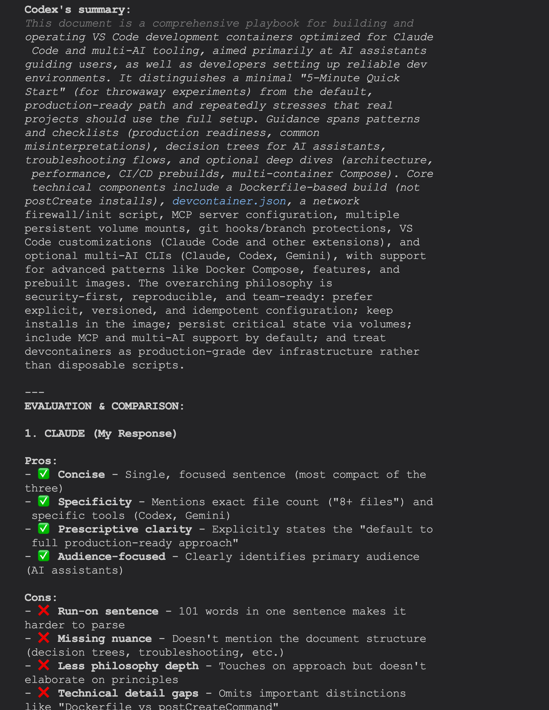
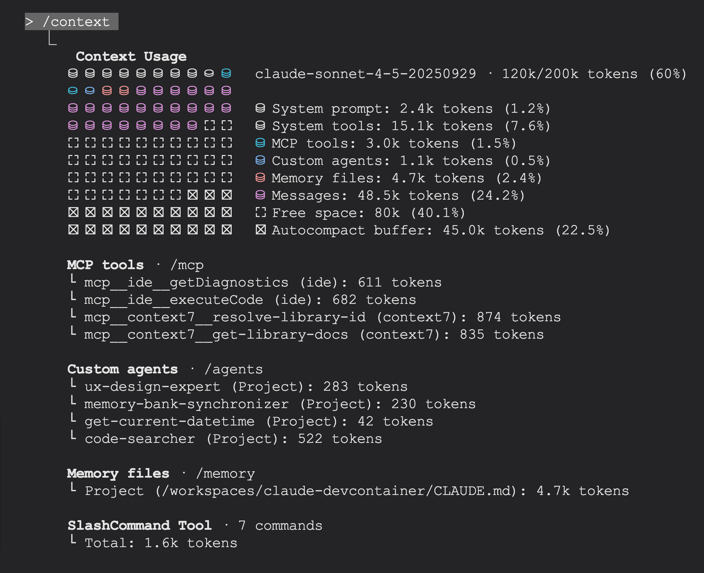

üëã Welcome!
This guide will teach you everything you need to know about development containers (devcontainers) for Claude Code. Whether you're a complete beginner or looking to refine your setup, you're in the right place. The guide was created from all my own experiences and collected context documentation used to create my own dev containers and will be continually updated as my development and experience progresses. If you like this guide and find it useful, consider buying me a coffee to support my work.
- What dev containers are and how they work
- Setting up a React project with dev containers
- Setting up a Python project with dev containers
- Setting up a Next.js application with dev containers
- Configuring multiple AI assistants in one container
- Troubleshooting common issues
You can provide this comprehensive llms.txt guide to AI assistants like Claude to help with dev container creation and usage. It contains detailed examples and best practices!
⚡ Quick Start
- Install Docker Desktop and VS Code
- Add the Dev Containers extension to VS Code
- Clone this repository and open it in VS Code
- Click "Reopen in Container" when prompted
- Wait for the container to build (first time takes 5-10 minutes)
- Start coding with Claude Code already configured!
30-Second Setup
üå± BeginnerFollow these steps to get your development environment running:
# 1. Clone the repository
git clone https://github.com/YOUR_USERNAME/claude-devcontainer.git
cd claude-devcontainer
# 2. Open in VS Code
code .
# 3. Press F1 and select: "Dev Containers: Reopen in Container"
# That's it! The container will build automatically.Verify Your Setup
After the container builds, verify everything works:
# Check Claude Code version
claude --version
# Check Docker
docker --version
# Check Git
git --version
# Test Claude Code
claude "Hello! Can you confirm you're running?"üì¶ What Are DevContainers?
- Containerized development environments that run inside Docker
- Ensure consistent setup across all team members
- Include all tools, dependencies, and configurations pre-installed
- Eliminate "works on my machine" problems
- Integrate seamlessly with VS Code
The Problem DevContainers Solve
Traditional development environments create several challenges:
- Inconsistent setups: Each developer has different tool versions and configurations
- Time-consuming onboarding: New team members spend hours or days setting up their environment
- Conflicts: Multiple projects require different versions of the same tools
- Documentation drift: Setup instructions become outdated as tools evolve
How DevContainers Work
DevContainers package your entire development environment into a Docker container:
1️⃣ Define
Specify your environment in devcontainer.json and Dockerfile
2️⃣ Build
VS Code builds a Docker container with all your tools pre-installed
3️⃣ Develop
Work inside the container as if it were your local machine
Key Benefits
üë• For Teams
- Everyone uses identical environments
- New developers start coding in minutes
- No more "works on my machine" issues
- Easy to update tools across the team
üßë‚Äçüíª For Individuals
- Keep your host system clean
- Switch between projects instantly
- No version conflicts between projects
- Replicate environments across machines
✅ Why Use Development Containers?
For Individual Developers
- ✓ Clean Host System: Your computer stays clean - no installing dozens of tools globally
- ✓ Multiple Environments: Work on Python 3.9 and Python 3.14 projects simultaneously without conflicts
- ✓ Consistency: Same setup works perfectly on Mac, Windows, and Linux
For Teams
- ✓ Fast Onboarding: New team members coding in minutes instead of hours/days
- ✓ Standardization: Everyone uses the exact same tool versions
- ✓ Documentation as Code: Setup is version-controlled and documented automatically
⚠️ When NOT to Use Dev Containers
Here's when to skip them:
-
✗
Simple Scripts: For a single Python script or small Node.js file, just run it locally
-
✗
GUI Applications: Desktop apps requiring native UI don't work well in containers
-
✗
Hardware Access: USB devices, GPUs, specialized hardware need complex setup
-
✗
Resource-Constrained Machines: Docker overhead (1-2GB RAM) may be too much for older computers
For simple projects, use nvm, pyenv, or rbenv for version management.
üìã Prerequisites
- Docker Desktop installed and running
- Visual Studio Code installed
- Dev Containers extension for VS Code
- Claude API key from console.anthropic.com
- At least 8GB RAM available (16GB recommended)
1. Install Docker Desktop
üå± RequiredDocker Desktop provides the container runtime that powers DevContainers.
Verify Docker installation
# Check Docker version
docker --version
# Should output: Docker version 24.x.x or higher
# Verify Docker is running
docker ps
# Should show running containers (or empty list if none running)
# Test with hello-world
docker run hello-world
# Should download and run a test container2. Install Visual Studio Code
üå± RequiredDownload VS Code from code.visualstudio.com
# Verify VS Code installation
code --version
# Should output version number (e.g., 1.85.0)3. Install Dev Containers Extension
üå± RequiredThis extension enables VS Code to work with DevContainers.
- Open VS Code
- Press
Ctrl+Shift+X(Windows/Linux) orCmd+Shift+X(Mac) - Search for "Dev Containers"
- Click "Install" on the extension by Microsoft
code --install-extension ms-vscode-remote.remote-containers
4. Get Your Claude API Key
üå± RequiredYou'll need an API key to use Claude Code:
- Visit console.anthropic.com
- Sign in or create an account
- Navigate to "API Keys"
- Click "Create Key"
- Copy the key (you'll only see it once!)
5. System Requirements
| Component | Minimum | Recommended |
|---|---|---|
| RAM | 8GB | 16GB or more |
| Disk Space | 10GB free | 20GB+ free |
| CPU | Dual-core | Quad-core or better |
| OS | macOS 10.15+, Windows 10+, Ubuntu 20.04+ | Latest versions |
üèóÔ∏è Architecture Overview
A dev container consists of three main components working together:
üìÑ devcontainer.json
The configuration file that tells VS Code how to connect to your container.
- Defines which extensions to install
- Sets environment variables
- Configures port forwarding
- Specifies post-creation commands
üê≥ Dockerfile
The blueprint that defines what's installed inside your container.
- Specifies base image (e.g., Node.js 22, Python 3.14)
- Installs system packages and tools
- Sets up users and permissions
- Configures the shell environment
⚙️ Init Scripts (Optional)
Automation scripts that run after the container starts.
- Initialize tool configurations
- Set up security policies
- Prepare the development environment
üìÅ File Structure Example
your-project/
├── .devcontainer/
│ ├── devcontainer.json # VS Code configuration
│ ├── Dockerfile # Container blueprint
│ ├── init-claude-config.sh # Claude Code auto-config
│ ├── init-claude-hooks.sh # Hook deployment script
│ ├── init-codex-config.sh # Codex CLI auto-config
│ ├── init-firewall.sh # Network security
│ ├── session-start.sh.template # Session hook template
│ ├── settings.json.template # Claude settings
│ ├── mcp.json.template # MCP servers
│ └── config.toml.template # Codex configuration
├── .gitignore
├── README.md
‚îî‚îÄ‚îÄ [your project files]üîí Security & Firewall Setup
- Three-layer IPv6 security architecture for maximum compatibility
- Default-deny firewall with IP range allowlisting
- Dynamic IP fetching from GitHub, Anthropic, Google, Cloudflare, AWS
- 100+ AI service domains pre-configured
- Docker-aware to preserve inter-container communication
- Self-testing with graceful degradation
Why Firewall for Dev Containers?
According to Claude's official documentation on sandboxing, network isolation is a core security layer. The firewall provides:
- Protection against data exfiltration to untrusted domains
- Controlled access to package registries and AI APIs
- Defense-in-depth alongside other security measures
- Audit trail of allowed network destinations
Three-Layer Security Architecture
⚡ AdvancedThis implementation provides maximum compatibility across Docker environments through defense-in-depth:
Layer 1
Container Creation: Disable IPv6 via sysctl flags at container startup (most reliable)
Layer 2
Runtime: Attempt IPv6 disable in init script with graceful degradation (warning, not failure)
Layer 3
Firewall Backup: ip6tables DROP rules block all IPv6 traffic if still enabled
Implementation - Docker Capabilities
Add these runArgs to devcontainer.json to grant minimal capabilities needed for firewall management:
"runArgs": [
"--cap-drop=ALL", // Drop all capabilities first
"--cap-add=NET_ADMIN", // Required for iptables/sysctl
"--cap-add=NET_RAW", // Required for packet filtering
"--cap-add=SETUID", // Required for sudo operations
"--cap-add=SETGID", // Required for group switching
"--cap-add=SYS_ADMIN", // Required for kernel parameters
"--sysctl=net.ipv6.conf.all.disable_ipv6=1", // Layer 1: IPv6 at creation
"--sysctl=net.ipv6.conf.default.disable_ipv6=1",
"--sysctl=net.ipv6.conf.lo.disable_ipv6=1"
],
"postStartCommand": "sudo /usr/local/bin/init-firewall.sh"Explanation of each capability
- --cap-drop=ALL: Start with minimal privileges (principle of least privilege)
- --cap-add=NET_ADMIN: Required to configure iptables and modify sysctl network parameters
- --cap-add=NET_RAW: Required for ipset and packet filtering operations
- --cap-add=SETUID/SETGID: Required for sudo operations (switching between users)
- --cap-add=SYS_ADMIN: Required to modify kernel parameters via sysctl
- --sysctl flags: Layer 1 of IPv6 security - disable at container creation time
üõ°Ô∏è Git Safety & Branch Protection
- Pre-commit hook blocks direct commits to main/master branches
- MANDATORY pre-work sync check ensures master is up-to-date
- Feature branch workflow prevents data loss
- Hooks reinstall automatically via postStartCommand
- Defense-in-depth: 5 safety layers (hook, CLAUDE.md, git-pr-helper, volumes, user review)
Why Git Safety Matters
Accidental data loss during refactoring or destructive operations is a common problem. This project implements a defense-in-depth approach to protect your work:
- Layer 1 - Git Hook (Technical Enforcement): Blocks commits to main/master automatically
- Layer 2 - CLAUDE.md Instructions (Guidance): Protocols guide safe workflows
- Layer 3 - git-pr-helper Skill (Workflow Assistance): Helps with PR/merge operations
- Layer 4 - Docker Volumes (Data Persistence): Configs survive container rebuilds
- Layer 5 - User Review (Final Check): Never merge without user confirmation
⚠️ MANDATORY: Pre-Work Sync Check
Before creating any new branch or starting work, ALWAYS ensure master is up-to-date:
View Pre-Work Sync Check Protocol
# 1. Switch to master (if not already there)
git checkout master
# 2. Fetch latest changes from remote (safe, doesn't merge)
git fetch origin
# 3. Check sync status
git statusStatus shows: "Your branch is up to date with 'origin/master'"
Action: Proceed to create feature branch
git checkout -b feature/new-api
git branch --show-current # Verify: "feature/new-api"
# ✅ Now safe to start work!Status shows: "Your branch is behind 'origin/master' by X commits"
Action: Pull changes before creating feature branch
git pull origin master # Update master
git status # Verify: "up to date"
git checkout -b feature/new-api
# ✅ Now safe to start work!Status shows: "Your branch and 'origin/master' have diverged"
Action: Resolve divergence before creating feature branch
# Option 1: If you have no local commits on master, force update
git reset --hard origin/master
# Option 2: If you have local commits, merge or rebase
git pull origin master # Creates merge commit
# OR
git rebase origin/master # Replays your commits on top
# Then verify and create feature branch
git status # Verify: "up to date"
git checkout -b feature/new-api
# ✅ Now safe to start work!Ensures your feature branch is based on the latest code, preventing:
- Work on outdated master
- Future merge conflicts
- Building features on old foundation
Git Hook Installation
Git hooks are stored in .git/hooks/ and are NOT committed to the repository. They must be installed after cloning or container rebuilds.
View setup-git-hooks.sh (automatic installation script)
#!/bin/bash
#
# Setup Git Hooks
#
# Installs git hooks for branch protection and safety.
# Run this after cloning the repository or rebuilding the container.
#
# Strict error handling
set -euo pipefail
# Dynamically resolve repository root
SCRIPT_DIR="$(cd "$(dirname "${BASH_SOURCE[0]}")" && pwd)"
REPO_ROOT="$(cd "$SCRIPT_DIR/.." && pwd)"
HOOKS_DIR="$REPO_ROOT/.git/hooks"
# Validate git repository
if [ ! -d "$REPO_ROOT/.git" ]; then
echo "❌ ERROR: Not a git repository"
echo "Current directory: $(pwd)"
echo "Expected .git at: $REPO_ROOT/.git"
exit 1
fi
# Validate hooks directory is writable
if [ -d "$HOOKS_DIR" ] && [ ! -w "$HOOKS_DIR" ]; then
echo "❌ ERROR: Hooks directory is not writable: $HOOKS_DIR"
exit 1
fi
echo "=== Git Hooks Setup ==="
echo ""
# Create hooks directory if it doesn't exist
if [ ! -d "$HOOKS_DIR" ]; then
echo "Creating hooks directory..."
mkdir -p "$HOOKS_DIR"
fi
# Install pre-commit hook
echo "Installing pre-commit hook..."
cat > "$HOOKS_DIR/pre-commit" << 'EOF'
#!/bin/bash
#
# Git Pre-Commit Hook: Branch Protection
#
# Prevents direct commits to main/master branches.
# Encourages feature branch workflow for safety.
#
BRANCH=$(git branch --show-current)
# Block commits to protected branches
if [ "$BRANCH" = "main" ] || [ "$BRANCH" = "master" ]; then
echo ""
echo "❌ ERROR: Direct commits to '$BRANCH' are not allowed"
echo ""
echo "This is a safety measure to protect your work."
echo ""
echo "üìù Create a feature branch instead:"
echo " git checkout -b feature/your-feature-name"
echo ""
echo "Or for session-based work:"
echo " git checkout -b session/$(date +%Y%m%d-%H%M)-description"
echo ""
exit 1
fi
# Success - allow commit
echo "✅ Committing to branch: $BRANCH"
exit 0
EOF
chmod +x "$HOOKS_DIR/pre-commit"
echo "✅ Pre-commit hook installed"
echo ""
# Verify installation
if [ -x "$HOOKS_DIR/pre-commit" ]; then
echo "✅ Hook is executable"
else
echo "❌ Hook is not executable!"
exit 1
fi
echo ""
echo "=== Setup Complete ==="
echo ""
echo "Git hooks have been installed successfully."
echo ""View pre-commit hook (installed by setup script)
#!/bin/bash
#
# Git Pre-Commit Hook: Branch Protection
#
# Prevents direct commits to main/master branches.
# Encourages feature branch workflow for safety.
#
BRANCH=$(git branch --show-current)
# Block commits to protected branches
if [ "$BRANCH" = "main" ] || [ "$BRANCH" = "master" ]; then
echo ""
echo "❌ ERROR: Direct commits to '$BRANCH' are not allowed"
echo ""
echo "This is a safety measure to protect your work."
echo ""
echo "üìù Create a feature branch instead:"
echo " git checkout -b feature/your-feature-name"
echo ""
echo "Or for session-based work:"
echo " git checkout -b session/$(date +%Y%m%d-%H%M)-description"
echo ""
exit 1
fi
# Success - allow commit
echo "✅ Committing to branch: $BRANCH"
exit 0Automatic Installation
Add to devcontainer.json for automatic installation on container startup:
{
"postStartCommand": "bash /workspaces/your-project/.devcontainer/setup-git-hooks.sh"
}Or install manually:
bash .devcontainer/setup-git-hooks.shSafe Workflow Protocol
Follow this protocol BEFORE any destructive operation (rm, major refactors, rewrites):
Step-by-step safe workflow
- Verify clean state: Run
git status- must show clean working tree or committed changes - Create feature branch: Use descriptive naming:
feature/description- for new featuresfix/description- for bug fixessession/YYYYMMDD-HHMM-description- for session-based workrefactor/description- for refactoring work
- Confirm branch: Run
git branch --show-current- must NOT be main/master - Proceed with changes - now safe to make destructive edits
- Commit frequently: After each logical unit of work
- Use git-pr-helper skill: When ready to create PR or merge
- Delete files while on main/master branch
- Run
rm -rfwithout verifying you're on a feature branch - Skip commits during long refactors
- Force-push to main/master
- Bypass pre-commit hook without explicit user request
git stash- preserve uncommitted changesgit reset --hard origin/main- discard all local changes (WARNING: destructive)- Always verify with user before discarding work
Branch Naming Conventions
feature/add-authentication
feature/update-api
fix/broken-login
refactor/clean-up-codesession/20251029-1045-add-firewall
session/20251029-1430-fix-bug
session/20251029-1600-update-docsFormat: session/YYYYMMDD-HHMM-description
Testing Workflows
Test 1: Verify hook blocks commits to main
git checkout master
git branch --show-current # Verify: "master"
echo "test" > test.txt
git add test.txt
git commit -m "test"
# Expected output:
# ❌ ERROR: Direct commits to 'master' are not allowed
# (commit should be blocked)Test 2: Verify hook allows commits on feature branch
git checkout -b test/hook-check
git branch --show-current # Verify: "test/hook-check"
echo "test" > test.txt
git add test.txt
git commit -m "test"
# Expected output:
# ✅ Committing to branch: test/hook-check
# (commit should succeed)üîß Troubleshooting
Problem: Hook doesn't block commits
Solution: Check if hook is installed
test -x .git/hooks/pre-commit && echo "✅ Installed" || echo "❌ Missing"If missing, run: bash .devcontainer/setup-git-hooks.sh
Problem: Permission denied error
Solution: Make hook executable
chmod +x .git/hooks/pre-commitProblem: Need to test hook manually
Solution: Run hook directly
.git/hooks/pre-commitProblem: Emergency fix needed on main
Better approach: Create hotfix branch
git checkout -b hotfix/critical-fixBypass (NOT recommended):
git commit --no-verify- Git automatically runs
.git/hooks/pre-commitbefore every commit - Hook reads current branch name with
git branch --show-current - If branch is
mainormaster, hook exits with code 1 (blocks commit) - Users can override with
--no-verifyflag if absolutely necessary
⚙️ Init Scripts
- 6 init scripts automate environment setup
- init-firewall.sh: 500+ line security script (IP ranges, DNS resolution, Docker preservation)
- init-claude-config.sh: Deploy Claude Code settings and MCP servers
- init-codex-config.sh: Configure Codex CLI for Docker
- init-python.sh: Install Python 3.14 via uv
- init-claude-hooks.sh: Deploy session start hooks
- init-opencode-config.sh: Configure OpenCode CLI
init-firewall.sh - Complete Network Security
⚡ ProductionThe complete firewall script with three-layer IPv6 security, dynamic IP range fetching, and self-testing:
View complete init-firewall.sh (500+ lines)
#!/bin/bash
set -euo pipefail
IFS=$'\n\t'
STATE_FILE="/var/lib/firewall-configured"
# Disable IPv6 to prevent bypass
echo "Disabling IPv6..."
sysctl -w net.ipv6.conf.all.disable_ipv6=1 >/dev/null 2>&1 || true
sysctl -w net.ipv6.conf.default.disable_ipv6=1 >/dev/null 2>&1 || true
sysctl -w net.ipv6.conf.lo.disable_ipv6=1 >/dev/null 2>&1 || true
# Check if already configured
if [ -f "$STATE_FILE" ]; then
echo "Firewall already configured, skipping..."
exit 0
fi
echo "Starting firewall configuration..."
# Initialize DNS resolution statistics
TOTAL_DOMAINS=0
RESOLVED_DOMAINS=0
FAILED_DOMAINS=0
# Extract Docker DNS before flushing
DOCKER_DNS_RULES=$(iptables-save -t nat | grep "127\.0\.0\.11" || true)
# Detect Docker networks
echo "Detecting Docker networks..."
DOCKER_NETWORKS=$(ip -o -f inet addr show | grep -v "127.0.0.1" | awk '{print $4}')
if [ -z "$DOCKER_NETWORKS" ]; then
echo "ERROR: Failed to detect Docker networks"
exit 1
fi
# Create ipset for allowed domains
ipset destroy allowed-domains 2>/dev/null || true
ipset create allowed-domains hash:net
# Fetch GitHub IP ranges
echo "Fetching GitHub IP ranges..."
gh_ranges=$(curl -s https://api.github.com/meta)
if [ -z "$gh_ranges" ]; then
echo "ERROR: Failed to fetch GitHub IP ranges"
exit 1
fi
echo "Processing GitHub IPs..."
while read -r cidr; do
echo "Adding GitHub range $cidr"
ipset add allowed-domains "$cidr" -exist
done < <(echo "$gh_ranges" | jq -r '(.web + .api + .git)[]' | aggregate -q)
# Add Anthropic IP ranges (official published ranges)
echo "Adding Anthropic IP ranges..."
echo "Adding Anthropic CIDR range 160.79.104.0/23"
ipset add allowed-domains "160.79.104.0/23" -exist
# Add Anthropic specific IP addresses
for ip in "34.162.46.92" "34.162.102.82" "34.162.136.91" "34.162.142.92" "34.162.183.95"; do
echo "Adding Anthropic IP $ip"
ipset add allowed-domains "$ip" -exist
done
# Fetch and add Google Cloud/API IP ranges
echo "Fetching Google Cloud/API IP ranges..."
goog_ranges=$(curl -s https://www.gstatic.com/ipranges/goog.json)
if [ -z "$goog_ranges" ]; then
echo "ERROR: Failed to fetch Google IP ranges"
exit 1
fi
echo "Processing Google IPs..."
while read -r cidr; do
echo "Adding Google range $cidr"
ipset add allowed-domains "$cidr" -exist
done < <(echo "$goog_ranges" | jq -r '.prefixes[].ipv4Prefix | select(. != null)')
# Fetch and add Cloudflare CDN IP ranges
echo "Fetching Cloudflare CDN IP ranges..."
cf_ranges=$(curl -s https://api.cloudflare.com/client/v4/ips)
if [ -z "$cf_ranges" ]; then
echo "ERROR: Failed to fetch Cloudflare IP ranges"
exit 1
fi
echo "Processing Cloudflare IPs..."
while read -r cidr; do
echo "Adding Cloudflare range $cidr"
ipset add allowed-domains "$cidr" -exist
done < <(echo "$cf_ranges" | jq -r '.result.ipv4_cidrs[]')
# Fetch and add AWS IP ranges (covers many AI services: Hugging Face, Replicate, etc.)
# Filtered for US East/West regions and EC2/CloudFront services only to limit allowlist size
echo "Fetching AWS IP ranges..."
aws_ranges=$(curl -s https://ip-ranges.amazonaws.com/ip-ranges.json)
if [ -z "$aws_ranges" ]; then
echo "ERROR: Failed to fetch AWS IP ranges"
exit 1
fi
echo "Processing AWS IPs (US regions: us-east-1, us-west-2; Services: EC2, CLOUDFRONT)..."
while read -r cidr; do
echo "Adding AWS range $cidr"
ipset add allowed-domains "$cidr" -exist
done < <(echo "$aws_ranges" | jq -r '.prefixes[] | select(.region == "us-east-1" or .region == "us-west-2") | select(.service == "EC2" or .service == "CLOUDFRONT") | .ip_prefix' | aggregate -q)
# Resolve and add allowed domains (defense-in-depth: includes DNS backup for services above)
for domain in \
"dns.google" \
"1.1.1.1" \
"8.8.8.8" \
"8.8.4.4" \
"auth.openai.com" \
"chatgpt.com" \
"context7.com" \
"unpkg.com" \
"cdn.jsdelivr.net" \
"cdnjs.cloudflare.com" \
"github.com" \
"api.github.com" \
"raw.githubusercontent.com" \
"github.githubassets.com" \
"collector.github.com" \
"ghcr.io" \
"pkg-containers.githubusercontent.com" \
"nodejs.org" \
"registry.npmjs.org" \
"pypi.org" \
"files.pythonhosted.org" \
"astral.sh" \
"bun.sh" \
"crates.io" \
"static.crates.io" \
"index.crates.io" \
"docker.io" \
"registry-1.docker.io" \
"auth.docker.io" \
"production.cloudflare.docker.com" \
"api.anthropic.com" \
"api.openai.com" \
"aistudio.google.com" \
"accounts.google.com" \
"oauth2.googleapis.com" \
"www.googleapis.com" \
"storage.googleapis.com" \
"content.googleapis.com" \
"generativelanguage.googleapis.com" \
"sentry.io" \
"statsig.anthropic.com" \
"statsig.com" \
"marketplace.visualstudio.com" \
"vscode.blob.core.windows.net" \
"update.code.visualstudio.com" \
"docs.mcp.cloudflare.com" \
"mcp.context7.com" \
"vercel.com" \
"ui.shadcn.com" \
"tailwindcss.com" \
"radix-ui.com" \
"fonts.googleapis.com" \
"fonts.gstatic.com" \
"react.dev" \
"reactjs.org" \
"esm.sh" \
"lucide.dev" \
"openrouter.ai" \
"api.cerebras.ai" "inference.cerebras.ai" "cloud.cerebras.ai" "cerebras.ai" \
"dashscope.aliyuncs.com" "qwen.ai" "qwenlm.ai" "aliyuncs.com" "alibabacloud.com" \
"cn-hangzhou.aliyuncs.com" "us-west-1.aliyuncs.com" "ap-southeast-1.aliyuncs.com" \
"api.minimax.chat" "minimax.chat" \
"z.ai" \
"api.cohere.ai" "cohere.ai" \
"api.together.xyz" "together.xyz" \
"api.replicate.com" "replicate.com" \
"api-inference.huggingface.co" "huggingface.co" \
"api.perplexity.ai" "perplexity.ai" \
"api.mistral.ai" "mistral.ai" \
"api.deepinfra.com" "deepinfra.com" \
"api.fireworks.ai" "fireworks.ai" \
"api.groq.com" "groq.com" \
"api.lepton.ai" "lepton.ai" \
"mancer.tech" "api.mancer.tech" \
"api.deepseek.com" "deepseek.com" \
"api.lingyiwanwu.com" "platform.lingyiwanwu.com"; do
# Check if IP address
if [[ "$domain" =~ ^[0-9]{1,3}\.[0-9]{1,3}\.[0-9]{1,3}\.[0-9]{1,3}$ ]]; then
echo "Adding IP $domain"
ipset add allowed-domains "$domain" -exist
continue
fi
# Resolve hostname with graceful error handling
TOTAL_DOMAINS=$((TOTAL_DOMAINS + 1))
echo "Resolving $domain..."
ips=$(dig +noall +answer A "$domain" | awk '$4 == "A" {print $5}')
if [ -z "$ips" ]; then
echo "WARNING: Failed to resolve $domain (continuing...)"
FAILED_DOMAINS=$((FAILED_DOMAINS + 1))
continue
fi
# Successfully resolved, add IPs to allowlist
domain_resolved=false
while read -r ip; do
if [[ ! "$ip" =~ ^[0-9]{1,3}\.[0-9]{1,3}\.[0-9]{1,3}\.[0-9]{1,3}$ ]]; then
echo "WARNING: Invalid IP from DNS for $domain: $ip (skipping)"
continue
fi
echo "Adding $ip for $domain"
ipset add allowed-domains "$ip" -exist
domain_resolved=true
done < <(echo "$ips")
# Count as resolved only if at least one valid IP was added
if [ "$domain_resolved" = true ]; then
RESOLVED_DOMAINS=$((RESOLVED_DOMAINS + 1))
else
FAILED_DOMAINS=$((FAILED_DOMAINS + 1))
fi
done
echo ""
echo "IP allowlist built successfully"
echo "DNS Resolution Summary: ${RESOLVED_DOMAINS}/${TOTAL_DOMAINS} domains resolved successfully"
if [ "$FAILED_DOMAINS" -gt 0 ]; then
echo " WARNING: ${FAILED_DOMAINS} domains failed to resolve"
fi
echo ""
# Flush iptables
echo "Flushing iptables..."
iptables -F
iptables -X
iptables -t nat -F
iptables -t nat -X
iptables -t mangle -F
iptables -t mangle -X
# Restore Docker DNS
if [ -n "$DOCKER_DNS_RULES" ]; then
echo "Restoring Docker DNS..."
iptables -t nat -N DOCKER_OUTPUT 2>/dev/null || true
iptables -t nat -N DOCKER_POSTROUTING 2>/dev/null || true
echo "$DOCKER_DNS_RULES" | xargs -L 1 iptables -t nat
fi
# Configure base rules
echo "Configuring base rules..."
iptables -A OUTPUT -p udp --dport 53 -j ACCEPT
iptables -A INPUT -p udp --sport 53 -j ACCEPT
iptables -A OUTPUT -p tcp --dport 22 -j ACCEPT
iptables -A INPUT -p tcp --sport 22 -m state --state ESTABLISHED -j ACCEPT
iptables -A INPUT -i lo -j ACCEPT
iptables -A OUTPUT -o lo -j ACCEPT
# Allow Docker networks
echo "Allowing Docker networks..."
while read -r network; do
echo " Allowing: $network"
iptables -A INPUT -s "$network" -j ACCEPT
iptables -A OUTPUT -d "$network" -j ACCEPT
done < <(echo "$DOCKER_NETWORKS")
# Set default-deny policies
echo "Setting default-deny policies..."
iptables -P INPUT DROP
iptables -P FORWARD DROP
iptables -P OUTPUT DROP
# Allow established connections
iptables -A INPUT -m state --state ESTABLISHED,RELATED -j ACCEPT
iptables -A OUTPUT -m state --state ESTABLISHED,RELATED -j ACCEPT
# Allow whitelisted domains
iptables -A OUTPUT -m set --match-set allowed-domains dst -j ACCEPT
# Reject all other traffic
iptables -A OUTPUT -j REJECT --reject-with icmp-admin-prohibited
# Configure IPv6 firewall rules (Layer 3 - Defense-in-depth)
echo "Configuring IPv6 firewall rules..."
ip6tables -P INPUT DROP 2>/dev/null || echo " Note: IPv6 may already be disabled"
ip6tables -P FORWARD DROP 2>/dev/null || true
ip6tables -P OUTPUT DROP 2>/dev/null || true
ip6tables -A INPUT -i lo -j ACCEPT 2>/dev/null || true
ip6tables -A OUTPUT -o lo -j ACCEPT 2>/dev/null || true
ip6tables -A INPUT -m state --state ESTABLISHED,RELATED -j ACCEPT 2>/dev/null || true
ip6tables -A OUTPUT -m state --state ESTABLISHED,RELATED -j ACCEPT 2>/dev/null || true
ip6tables -A INPUT -j REJECT 2>/dev/null || true
ip6tables -A OUTPUT -j REJECT 2>/dev/null || true
echo "IPv6 firewall rules configured"
echo ""
echo "Firewall configuration complete!"
echo ""
# Verify firewall
echo "Verifying firewall..."
# Check IPv6 disabled (warning only, not fatal)
if sysctl net.ipv6.conf.all.disable_ipv6 | grep -q "= 1"; then
echo "✓ IPv6 disabled"
else
echo "⚠ WARNING: IPv6 is still enabled (container restrictions may prevent disabling)"
echo " IPv6 traffic will be blocked by ip6tables rules as a security fallback"
echo " This is expected in some Docker environments and does not affect security"
fi
# Check blocked domains
if curl --connect-timeout 5 https://example.com >/dev/null 2>&1; then
echo "✗ Firewall failed - can reach example.com"
exit 1
else
echo "✓ Blocked example.com as expected"
fi
# Check allowed domains
if ! curl --connect-timeout 5 https://api.github.com/zen >/dev/null 2>&1; then
echo "✗ Cannot reach api.github.com"
exit 1
else
echo "✓ Can reach api.github.com as expected"
fi
# Verify OpenRouter API access
if ! curl --connect-timeout 5 https://openrouter.ai/api/v1/models >/dev/null 2>&1; then
echo "✗ Cannot reach OpenRouter"
exit 1
else
echo "✓ Can reach OpenRouter as expected"
fi
# Verify Cerebras API access
if ! curl --connect-timeout 5 https://api.cerebras.ai/v1/models >/dev/null 2>&1; then
echo "✗ Cannot reach Cerebras"
exit 1
else
echo "✓ Can reach Cerebras as expected"
fi
# Mark as configured
touch "$STATE_FILE"
echo "Firewall configured successfully!"Other Init Scripts
init-claude-config.sh - Deploy Claude Code configuration
#!/bin/bash
# Claude Code configuration deployment script
set -e
echo "=== Claude Code Configuration Setup ==="
TEMPLATE_DIR="/usr/local/share/claude-defaults"
CLAUDE_DIR="/home/node/.claude"
# Create .claude directory if it doesn't exist
mkdir -p "$CLAUDE_DIR"
# Deploy settings.json if it doesn't exist
if [ ! -f "$CLAUDE_DIR/settings.json" ]; then
cp "$TEMPLATE_DIR/settings.json" "$CLAUDE_DIR/settings.json"
echo "✅ Deployed settings.json"
else
echo "ℹ️ settings.json already exists (skipping)"
fi
# Deploy mcp.json if it doesn't exist
if [ ! -f "$CLAUDE_DIR/mcp.json" ]; then
cp "$TEMPLATE_DIR/mcp.json" "$CLAUDE_DIR/mcp.json"
echo "✅ Deployed mcp.json"
else
echo "ℹ️ mcp.json already exists (skipping)"
fi
# Ensure proper ownership
chown -R node:node "$CLAUDE_DIR"
echo "=== Claude Code Configuration Complete ==="init-codex-config.sh - Configure Codex CLI for Docker
#!/bin/bash
# Codex CLI configuration deployment script
set -e
echo "=== Codex CLI Configuration Setup ==="
TEMPLATE_DIR="/usr/local/share/codex-defaults"
CODEX_DIR="/home/node/.codex"
# Create .codex directory if it doesn't exist
mkdir -p "$CODEX_DIR"
# Deploy config.toml if it doesn't exist
if [ ! -f "$CODEX_DIR/config.toml" ]; then
cp "$TEMPLATE_DIR/config.toml" "$CODEX_DIR/config.toml"
echo "✅ Deployed config.toml"
else
echo "ℹ️ config.toml already exists (skipping)"
fi
# Ensure proper ownership
chown -R node:node "$CODEX_DIR"
echo "=== Codex CLI Configuration Complete ==="init-claude-hooks.sh - Deploy session start hooks
#!/bin/bash
# Claude Code hook deployment script
set -e
echo "=== Claude Code Hooks Setup ==="
TEMPLATE_DIR="/usr/local/share/claude-defaults/hooks"
WORKSPACE_HOOKS="/workspaces/$(basename $PWD)/.claude/hooks"
mkdir -p "$WORKSPACE_HOOKS"
# Only deploy if hook doesn't exist (preserves user customizations)
if [ ! -f "$WORKSPACE_HOOKS/session-start.sh" ]; then
cp "$TEMPLATE_DIR/session-start.sh" "$WORKSPACE_HOOKS/session-start.sh"
chmod +x "$WORKSPACE_HOOKS/session-start.sh"
echo "✅ Deployed session-start.sh"
else
echo "ℹ️ session-start.sh already exists (skipping)"
fi
echo "=== Hooks Setup Complete ==="init-gemini-config.sh - Configure Gemini CLI
#!/bin/bash
# Gemini CLI configuration deployment script
set -e
echo "=== Gemini CLI Configuration Setup ==="
GEMINI_DIR="/home/node/.gemini"
# Create .gemini directory if it doesn't exist
mkdir -p "$GEMINI_DIR"
# Ensure proper ownership
chown -R node:node "$GEMINI_DIR"
echo "✅ Gemini CLI directory configured"
echo "ℹ️ Run '/auth' in Gemini CLI to authenticate"
echo "=== Gemini CLI Configuration Complete ==="init-python.sh - Install Python 3.14 via uv
#!/bin/bash
set -e
echo "=== Python 3.14 Setup ==="
# Install Python 3.14 via uv
echo "Installing Python 3.14..."
/home/node/.local/bin/uv python install 3.14
# Pin Python 3.14 for the project
echo "Pinning Python 3.14..."
cd /workspaces/$(basename $PWD)
/home/node/.local/bin/uv python pin 3.14
# Get Python 3.14 path
PYTHON314_PATH=$(/home/node/.local/bin/uv python find 3.14)
echo "Python 3.14 installed at: $PYTHON314_PATH"
# Create system symlink and update alternatives (requires sudo)
sudo ln -sf "$PYTHON314_PATH" /usr/local/bin/python3.14
sudo update-alternatives --install /usr/bin/python python /usr/local/bin/python3.14 100
sudo update-alternatives --install /usr/bin/python3 python3 /usr/local/bin/python3.14 100
# Verify installation
echo "Verifying Python installation..."
python --version
python3 --version
echo ""
echo "Available Python versions:"
/home/node/.local/bin/uv python list
echo "✅ Python 3.14 configured as default"- Runs during postCreateCommand: Executes after volume mounts, ensuring proper persistence
- Volume persistence: Python 3.14 installation saved in /home/node/.local volume
- System Python 3.11 retained: Keeps Python 3.11 for node-gyp compatibility
- Reproducible setup: Same Python version across container rebuilds
- update-alternatives integration: Sets Python 3.14 as default python command
init-opencode-config.sh - Configure OpenCode CLI
#!/bin/bash
# OpenCode CLI configuration deployment script
set -e
echo "=== OpenCode CLI Configuration Setup ==="
OPENCODE_DIR="/home/node/.opencode"
# Create .opencode directory if it doesn't exist
mkdir -p "$OPENCODE_DIR"
# Ensure proper ownership
chown -R node:node "$OPENCODE_DIR"
echo "✅ OpenCode CLI directory configured"
echo "ℹ️ Configure provider: opencode config set provider "
echo "=== OpenCode CLI Configuration Complete ===" ü™ù Session Start Hook Configuration
- Session hook runs automated checks when Claude Code starts
- Verifies devcontainer environment, volumes, MCP servers, tools
- Warns if on main/master branch
- Deploys automatically via postCreateCommand
- Survives container rebuilds (mounted as Docker volume)
What the Session Hook Does
Session hooks allow you to run automated checks and setup tasks when Claude Code starts. This project includes a SessionStart hook that verifies your devcontainer environment on every session.
- Confirms devcontainer environment detection
- Verifies mounted volumes (.claude, .codex, .gemini, .opencode, etc.)
- Lists configured MCP servers
- Checks tool availability (claude, codex, gemini, opencode, gh, etc.)
- Displays network configuration
- Shows current git branch and warns if on main/master
Configuration Format
Add this to your ~/.claude/settings.json (user-level) or .claude/settings.json (workspace-level):
View correct settings.json format
{
"$schema": "https://json.schemastore.org/claude-code-settings.json",
"hooks": {
"SessionStart": [
{
"hooks": [
{
"type": "command",
"command": "\"$CLAUDE_PROJECT_DIR\"/.claude/hooks/session-start.sh"
}
]
}
]
}
}- Capitalized event name: Use
"SessionStart", not"sessionStart" - Array format:
"SessionStart": [{ "hooks": [...] }] - No matcher field: SessionStart hooks don't use matchers (unlike PreToolUse/PostToolUse)
- $CLAUDE_PROJECT_DIR variable: Use instead of absolute paths for portability
- Double quotes around path: Required for paths with environment variables
❌ Old format (will fail validation)
{
"hooks": {
"sessionStart": {
"command": ".claude/hooks/session-start.sh"
}
}
}❌ With matcher field (SessionStart doesn't use matchers)
{
"hooks": {
"SessionStart": [{
"matcher": {},
"hooks": [...]
}]
}
}Hook Deployment Process
The session hook is deployed automatically when the devcontainer is first created, using a 4-step process:
Dockerfile copies session-start.sh.template and init-claude-hooks.sh into the container image at build time.
postCreateCommand runs init-claude-hooks.sh on first container creation.
Script copies template to .claude/hooks/session-start.sh (only if file doesn't exist, preserving user customizations).
.claude/ directory is mounted as a Docker volume, so your customizations survive container rebuilds.
View init-claude-hooks.sh deployment script
#!/bin/bash
# Claude Code hook deployment script
set -e
echo "=== Claude Code Hooks Setup ==="
TEMPLATE_DIR="/usr/local/share/claude-defaults/hooks"
WORKSPACE_HOOKS="/workspaces/$(basename $PWD)/.claude/hooks"
mkdir -p "$WORKSPACE_HOOKS"
# Only deploy if hook doesn't exist (preserves user customizations)
if [ ! -f "$WORKSPACE_HOOKS/session-start.sh" ]; then
cp "$TEMPLATE_DIR/session-start.sh" "$WORKSPACE_HOOKS/session-start.sh"
chmod +x "$WORKSPACE_HOOKS/session-start.sh"
echo "✅ Deployed session-start.sh"
else
echo "ℹ️ session-start.sh already exists (skipping)"
fi
echo "=== Hooks Setup Complete ==="- Automatic deployment: No manual copying required
- Preserves customizations: Won't overwrite existing hooks
- Survives rebuilds: Volume persistence keeps your changes
- Template versioning: Template stays in container for reference
Verifying the Hook
To verify your hook configuration is correct:
# Check for validation errors
claude /doctor
# Should show no errors in "Invalid Settings" section
# If you see errors about hooks format, the configuration is incorrectüìö Additional Resources
- • Official hooks documentation: docs.claude.com/hooks
- • Hook examples: Claude Cookbooks
- • Session hook script: Located at
.devcontainer/session-start.sh.template
⚙️ Claude Code Configuration & MCP
Automatically configure Claude Code settings and MCP (Model Context Protocol) servers on container startup. This provides enhanced functionality like library documentation lookup and Cloudflare-specific help.
Model Context Protocol (MCP) extends Claude Code with specialized capabilities through remote servers. Think of it like installing plugins that give Claude instant access to documentation and APIs.
- context7: Look up up-to-date library documentation (React, Next.js, Supabase, MongoDB, etc.)
- cf-docs: Search Cloudflare documentation (Workers, Pages, R2, D1, etc.)
The init-claude-config.sh Script
This script automatically sets up Claude Code configuration on container startup by:
- Creating
.claudedirectory if it doesn't exist - Copying MCP server configuration for context7 and cf-docs
- Copying settings template with optimized environment variables
- Ensuring npm global directory structure exists (required for npx with MCP)
- Preserving user settings if they already exist (won't overwrite)
1. Create init-claude-config.sh
Save this script in your .devcontainer directory:
View complete init-claude-config.sh script
#!/bin/bash
set -euo pipefail
CLAUDE_HOME="/home/node/.claude"
MCP_FILE="$CLAUDE_HOME/mcp.json"
MCP_TEMPLATE="/usr/local/share/claude-defaults/mcp.json"
SETTINGS_TEMPLATE="/usr/local/share/claude-defaults/settings.json"
echo "Initializing Claude Code configuration..."
# Create .claude directory if it doesn't exist
if [ ! -d "$CLAUDE_HOME" ]; then
echo "Creating $CLAUDE_HOME directory..."
mkdir -p "$CLAUDE_HOME"
chown node:node "$CLAUDE_HOME"
fi
# Copy MCP configuration if it doesn't exist
if [ ! -f "$MCP_FILE" ]; then
if [ -f "$MCP_TEMPLATE" ]; then
echo "Copying MCP server configuration..."
cp "$MCP_TEMPLATE" "$MCP_FILE"
chown node:node "$MCP_FILE"
echo "✓ MCP servers configured:"
echo " - context7 (npx @upstash/context7-mcp with API key)"
echo " - cf-docs (npx mcp-remote with OAuth)"
else
echo "Warning: MCP template not found at $MCP_TEMPLATE"
fi
else
echo "MCP configuration already exists, preserving user settings"
fi
# Copy settings.json template if it doesn't exist
if [ ! -f "$CLAUDE_HOME/settings.json" ]; then
if [ -f "$SETTINGS_TEMPLATE" ]; then
echo "Copying Claude Code settings from template..."
cp "$SETTINGS_TEMPLATE" "$CLAUDE_HOME/settings.json"
chown node:node "$CLAUDE_HOME/settings.json"
echo "✓ Environment variables configured (MAX_MCP_OUTPUT_TOKENS, timeouts)"
fi
else
echo "Settings already exist, preserving user settings"
fi
# Ensure npm global directory structure exists (required for npx with MCP servers)
if [ ! -d "/home/node/.npm-global/lib" ]; then
echo "Creating npm global directory structure..."
mkdir -p /home/node/.npm-global/lib
chown -R node:node /home/node/.npm-global
echo "✓ npm global directory initialized"
fi
echo "Claude Code configuration complete"2. Create settings.json.template
This template configures Claude Code with optimized settings:
Basic Configuration (Recommended)
View basic settings.json template
{
"$schema": "https://json.schemastore.org/claude-code-settings.json",
"dangerously_skip_permissions": true,
"verbose": true,
"env": {
"MAX_MCP_OUTPUT_TOKENS": "60000",
"BASH_DEFAULT_TIMEOUT_MS": "300000",
"BASH_MAX_TIMEOUT_MS": "600000",
"MAX_THINKING_TOKENS": "8192"
},
"includeCoAuthoredBy": false
}üìù Note: MCP servers are now configured separately in mcp.json at the project root (see section 3 below).
Optional: With OpenTelemetry
Use this version if you have OpenTelemetry infrastructure (otel-collector service):
View settings.json with OpenTelemetry
{
"$schema": "https://json.schemastore.org/claude-code-settings.json",
"dangerously_skip_permissions": true,
"verbose": true,
"env": {
"MAX_MCP_OUTPUT_TOKENS": "60000",
"BASH_DEFAULT_TIMEOUT_MS": "300000",
"BASH_MAX_TIMEOUT_MS": "600000",
"MAX_THINKING_TOKENS": "8192",
"CLAUDE_CODE_ENABLE_TELEMETRY": "1",
"OTEL_LOG_USER_PROMPTS": "1",
"OTEL_METRICS_EXPORTER": "otlp",
"OTEL_LOGS_EXPORTER": "otlp",
"OTEL_EXPORTER_OTLP_PROTOCOL": "grpc",
"OTEL_EXPORTER_OTLP_ENDPOINT": "http://otel-collector:4317",
"OTEL_RESOURCE_ATTRIBUTES": "deployment.environment=devcontainer,service.name=claude-code"
},
"includeCoAuthoredBy": false
}- MAX_MCP_OUTPUT_TOKENS: Allows larger documentation responses (60,000 tokens)
- BASH_*_TIMEOUT_MS: Extended timeouts for long-running commands
- MAX_THINKING_TOKENS: Enables deeper reasoning (8,192 tokens)
- dangerously_skip_permissions: Skips tool execution prompts for 50-80% faster responses (⚠️ ONLY safe in isolated devcontainers)
- verbose: Enables detailed logging for easier debugging (no performance impact)
Only include these if you have OpenTelemetry infrastructure (otel-collector service):
- CLAUDE_CODE_ENABLE_TELEMETRY: Enables telemetry collection in Claude Code
- OTEL_LOG_USER_PROMPTS: Logs user prompts for debugging and analysis
- OTEL_METRICS_EXPORTER: Sets metrics export protocol (otlp)
- OTEL_LOGS_EXPORTER: Sets logs export protocol (otlp)
- OTEL_EXPORTER_OTLP_PROTOCOL: Communication protocol for OTLP (grpc or http)
- OTEL_EXPORTER_OTLP_ENDPOINT: URL of your OpenTelemetry collector endpoint
- OTEL_RESOURCE_ATTRIBUTES: Service identification metadata for distributed tracing
3. Create mcp.json.template
MCP configuration with stdio transport using npx for package execution:
View mcp.json.template
{
"mcpServers": {
"context7": {
"command": "npx",
"args": ["-y", "@upstash/context7-mcp"],
"env": {
"CONTEXT7_API_KEY": "${CONTEXT7_API_KEY}"
}
},
"cf-docs": {
"command": "npx",
"args": ["mcp-remote", "https://docs.mcp.cloudflare.com/mcp"]
},
"chrome-devtools": {
"command": "npx",
"args": [
"-y",
"chrome-devtools-mcp@latest",
"--executablePath=/usr/bin/chromium",
"--headless",
"--chromeArg=--no-sandbox",
"--chromeArg=--disable-setuid-sandbox",
"--chromeArg=--disable-dev-shm-usage"
],
"transport": {
"type": "stdio"
}
}
}
}üí° Chrome DevTools Note: The --executablePath=/usr/bin/chromium argument is required in containers because Chromium (not Google Chrome) is installed at /usr/bin/chromium. The --no-sandbox and related flags are required for running Chromium in Docker containers.
4. Create config.toml.template (Codex CLI)
This template configures Codex CLI for Docker containers by disabling the Landlock sandbox (not supported in LinuxKit kernel):
View config.toml.template
# Codex CLI configuration template for Docker containers
# Auto-copied to ~/.codex/config.toml by init-codex-config.sh
model = "gpt-5"
model_reasoning_effort = "medium"
# CRITICAL: Disable Landlock sandbox (not supported in Docker's LinuxKit kernel)
# OpenAI's official recommendation for containerized environments
# Security is provided by Docker isolation, network firewall, and non-root user
sandbox_mode = "danger-full-access"
approval_policy = "never"- Docker's LinuxKit kernel doesn't support Landlock security module
- Container already provides isolation via Docker, firewall, non-root user
- OpenAI's official recommendation for containerized environments
- See Troubleshooting → Codex CLI Landlock Error for details
5. Create init-codex-config.sh
This script automatically configures Codex CLI on container startup:
View init-codex-config.sh script
#!/bin/bash
set -euo pipefail
CODEX_HOME="/home/node/.codex"
CONFIG_FILE="$CODEX_HOME/config.toml"
CONFIG_TEMPLATE="/usr/local/share/codex-defaults/config.toml"
echo "Initializing Codex CLI configuration..."
# Create .codex directory if it doesn't exist
if [ ! -d "$CODEX_HOME" ]; then
echo "Creating $CODEX_HOME directory..."
mkdir -p "$CODEX_HOME"
chown node:node "$CODEX_HOME"
fi
# Copy config template if it doesn't exist
if [ ! -f "$CONFIG_FILE" ]; then
if [ -f "$CONFIG_TEMPLATE" ]; then
echo "Copying Codex CLI configuration from template..."
cp "$CONFIG_TEMPLATE" "$CONFIG_FILE"
chown node:node "$CONFIG_FILE"
echo "✓ Codex sandbox disabled (Docker container isolation used instead)"
echo " sandbox_mode: danger-full-access"
echo " approval_policy: never"
else
echo "Warning: Codex config template not found at $CONFIG_TEMPLATE"
fi
else
echo "Codex config already exists, preserving user settings"
fi
echo "Codex CLI configuration complete"- Idempotent: Only creates config if it doesn't exist
- Preserves user settings: Won't overwrite existing configuration
- Proper ownership: Uses chown to ensure node user can access files
- Informative output: Logs what it's doing for debugging
6. Integrate into Dockerfile
Add these sections to your Dockerfile to enable automatic configuration:
# Switch to root for setup
USER root
# Create directories for Claude Code and Codex defaults
RUN mkdir -p /usr/local/share/claude-defaults /usr/local/share/codex-defaults
# Copy init scripts and templates
COPY init-claude-config.sh /usr/local/bin/
COPY init-codex-config.sh /usr/local/bin/
COPY --chown=node:node settings.json.template /usr/local/share/claude-defaults/settings.json
COPY --chown=node:node mcp.json.template /usr/local/share/claude-defaults/mcp.json
COPY --chown=node:node config.toml.template /usr/local/share/codex-defaults/config.toml
# Set permissions and configure sudoers for all init scripts
RUN chmod +x /usr/local/bin/init-claude-config.sh && \
chmod +x /usr/local/bin/init-codex-config.sh && \
echo "node ALL=(root) NOPASSWD: /usr/local/bin/init-claude-config.sh" > /etc/sudoers.d/node-claude-config && \
echo "node ALL=(root) NOPASSWD: /usr/local/bin/init-codex-config.sh" > /etc/sudoers.d/node-codex-config && \
chmod 0440 /etc/sudoers.d/node-claude-config && \
chmod 0440 /etc/sudoers.d/node-codex-config
# Switch back to node user
USER node7. Update devcontainer.json
Run all initialization scripts on container startup:
{
"postStartCommand": "sudo /usr/local/bin/init-claude-config.sh && sudo /usr/local/bin/init-codex-config.sh && sudo /usr/local/bin/init-firewall.sh"
}- init-claude-config.sh - Configure Claude Code & MCP servers
- init-codex-config.sh - Configure Codex CLI (disable Landlock sandbox)
- init-firewall.sh - Apply network security rules (runs last)
Config scripts run before the firewall to ensure npm/npx can download packages if needed. All scripts run automatically each time the container starts.
- Zero manual setup: MCP servers configured automatically on first run
- Instant documentation access: Ask Claude about any library and get current docs
- Preserves customization: Won't overwrite if you modify settings manually
- Team consistency: Everyone gets the same optimized configuration
- Extensible: Easy to add more MCP servers or environment variables
üìù Configuration Templates
- settings.json - Claude Code settings (basic + OpenTelemetry versions)
- mcp.json - MCP server configuration (context7, cf-docs, chrome-devtools)
- config.toml - Codex CLI configuration with Landlock workaround
- All templates are deployed automatically by init scripts
settings.json - Claude Code Settings
Basic configuration (recommended)
{
"$schema": "https://json.schemastore.org/claude-code-settings.json",
"dangerously_skip_permissions": true,
"verbose": true,
"env": {
"MAX_MCP_OUTPUT_TOKENS": "60000",
"BASH_DEFAULT_TIMEOUT_MS": "300000",
"BASH_MAX_TIMEOUT_MS": "600000",
"MAX_THINKING_TOKENS": "8192"
},
"includeCoAuthoredBy": false
}With OpenTelemetry (observability)
{
"$schema": "https://json.schemastore.org/claude-code-settings.json",
"dangerously_skip_permissions": true,
"verbose": true,
"env": {
"MAX_MCP_OUTPUT_TOKENS": "60000",
"BASH_DEFAULT_TIMEOUT_MS": "300000",
"BASH_MAX_TIMEOUT_MS": "600000",
"MAX_THINKING_TOKENS": "8192",
"CLAUDE_CODE_ENABLE_TELEMETRY": "1",
"OTEL_LOG_USER_PROMPTS": "1",
"OTEL_METRICS_EXPORTER": "otlp",
"OTEL_LOGS_EXPORTER": "otlp",
"OTEL_EXPORTER_OTLP_PROTOCOL": "grpc",
"OTEL_EXPORTER_OTLP_ENDPOINT": "http://otel-collector:4317",
"OTEL_RESOURCE_ATTRIBUTES": "deployment.environment=devcontainer,service.name=claude-code"
},
"includeCoAuthoredBy": false
}dangerously_skip_permissions: Safe in devcontainers (isolated environment)MAX_MCP_OUTPUT_TOKENS: Allows larger MCP server responsesBASH_DEFAULT_TIMEOUT_MS: Default command timeout (5 minutes)MAX_THINKING_TOKENS: Extended thinking for complex problems
mcp.json - MCP Server Configuration
Complete MCP server configuration
{
"mcpServers": {
"context7": {
"command": "npx",
"args": ["-y", "@upstash/context7-mcp"],
"env": {
"CONTEXT7_API_KEY": "${CONTEXT7_API_KEY}"
}
},
"cf-docs": {
"command": "npx",
"args": ["mcp-remote", "https://docs.mcp.cloudflare.com/mcp"]
},
"chrome-devtools": {
"command": "npx",
"args": [
"-y",
"chrome-devtools-mcp@latest",
"--executablePath=/usr/bin/chromium",
"--headless",
"--chromeArg=--no-sandbox",
"--chromeArg=--disable-setuid-sandbox",
"--chromeArg=--disable-dev-shm-usage"
],
"transport": {
"type": "stdio"
}
}
}
}--no-sandbox, --disable-setuid-sandbox) are required because Docker's security model conflicts with Chrome's sandbox. The container's isolation provides equivalent security.
config.toml - Codex CLI Configuration
Codex CLI config with Landlock workaround
# Codex CLI configuration template for Docker containers
model = "gpt-4.0"
model_reasoning_effort = "medium"
# CRITICAL: Disable Landlock sandbox (not supported in Docker's LinuxKit kernel)
sandbox_mode = "danger-full-access"
approval_policy = "never"sandbox_mode = "danger-full-access" for Docker environments. The container's isolation provides security instead.
üí° Examples
- Complete production examples with all 13 volume mounts
- Multi-AI: Claude Code + Codex + Gemini + OpenCode in one container
- React: Complete with BuildKit optimization and init scripts
- Python: Basic (pip) and Advanced (uv with Python 3.14)
- All examples include security runArgs and firewall setup
Multi-AI DevContainer - Production Setup
⚡ Complete- Claude Code: Excellent for complex reasoning, refactoring, architectural decisions
- Codex: Great for code completion and quick code generation
- Gemini: Strong at multimodal tasks and Google ecosystem integration
- OpenCode: Open-source, terminal-native agent with multi-model support
Complete devcontainer.json with all 13 volumes
{
"name": "Multi-AI Dev Container",
"build": {
"dockerfile": "Dockerfile"
},
"customizations": {
"vscode": {
"extensions": [
"anthropic.claude-code",
"openai.codex-vscode",
"sst-dev.opencode",
"google.gemini-cli-vscode-ide-companion",
"google.geminicodeassist",
"dbaeumer.vscode-eslint",
"esbenp.prettier-vscode",
"kilocode.kilo-code",
"tamasfe.even-better-toml",
"ms-toolsai.jupyter-keymap",
"ms-vscode.sublime-keybindings",
"grapecity.gc-excelviewer",
"imgildev.vscode-json-flow",
"redhat.vscode-yaml"
],
"settings": {
"editor.formatOnSave": true
}
}
},
"runArgs": [
"--cap-drop=ALL",
"--cap-add=NET_ADMIN",
"--cap-add=NET_RAW",
"--cap-add=SETUID",
"--cap-add=SETGID",
"--cap-add=SYS_ADMIN",
"--sysctl=net.ipv6.conf.all.disable_ipv6=1",
"--sysctl=net.ipv6.conf.default.disable_ipv6=1",
"--sysctl=net.ipv6.conf.lo.disable_ipv6=1"
],
"forwardPorts": [3000, 5000, 8000],
"postCreateCommand": "npm install -g @anthropic-ai/claude-code@latest && npm install -g @openai/codex && npm install -g @google/gemini-cli && npm install -g opencode-ai@latest && npm install -g wrangler@latest && npm install -g vercel@latest && (npm install || pip install -r requirements.txt || echo 'No dependencies to install') && /usr/local/bin/init-claude-config.sh && /usr/local/bin/init-codex-config.sh && /usr/local/bin/init-opencode-config.sh && /usr/local/bin/init-python.sh && /usr/local/bin/init-claude-hooks.sh",
"postStartCommand": "sudo /usr/local/bin/init-firewall.sh",
"remoteUser": "node",
"mounts": [
"source=claude-code-bashhistory-${devcontainerId},target=/commandhistory,type=volume",
"source=claude-config-${devcontainerId},target=/home/node/.claude,type=volume",
"source=codex-config-${devcontainerId},target=/home/node/.codex,type=volume",
"source=gemini-config-${devcontainerId},target=/home/node/.gemini,type=volume",
"source=opencode-config-${devcontainerId},target=/home/node/.opencode,type=volume",
"source=ghub-config-${devcontainerId},target=/home/node/.config/gh,type=volume",
"source=npm-global-${devcontainerId},target=/home/node/.npm-global,type=volume",
"source=cargo-${devcontainerId},target=/home/node/.cargo,type=volume",
"source=bun-${devcontainerId},target=/home/node/.bun,type=volume",
"source=local-bin-${devcontainerId},target=/home/node/.local,type=volume",
"source=aws-config-${devcontainerId},target=/home/node/.aws,type=volume",
"source=wrangler-config-${devcontainerId},target=/home/node/.wrangler,type=volume",
"source=vercel-config-${devcontainerId},target=/home/node/.vercel,type=volume"
]
}- Complete volume setup: All 13 volumes for full production capabilities
- Multiple extensions: Install all AI assistant VS Code extensions at once
- Security runArgs: Minimal capabilities for firewall with three-layer IPv6 protection
- Flexible postCreateCommand: Works with npm, pip, or no dependencies
- Infrastructure tools: Includes wrangler (Cloudflare), vercel (Vercel), AWS CLI, cargo (Rust/uv), bun
- Docker:
~/.docker - Kubernetes:
~/.kube - Terraform:
~/.terraform.d - Google Cloud:
~/.config/gcloud - Azure CLI:
~/.azure
Complete Multi-AI Dockerfile
FROM node:22
ARG TZ
ENV TZ="$TZ"
ARG CLAUDE_CODE_VERSION=latest
# Upgrade npm to latest version (ensures security patches and latest features)
RUN npm install -g npm@latest
# Install development tools, compilers, and utilities with BuildKit cache mounts
# BuildKit cache mounts provide 5-10x faster rebuilds
RUN --mount=type=cache,target=/var/cache/apt,sharing=locked \
--mount=type=cache,target=/var/lib/apt/lists,sharing=locked \
apt-get update && apt-get install -y --no-install-recommends \
# Core utilities
less curl wget ca-certificates gnupg2 software-properties-common \
apt-transport-https lsb-release \
# Version control
git git-lfs gh \
# Shell and terminal tools
zsh fzf man-db \
# Process and system tools
procps htop tree sudo \
# Network tools
dnsutils net-tools iputils-ping telnet netcat-openbsd \
iptables ipset iproute2 aggregate \
# Archive and compression
unzip zip bzip2 xz-utils \
# Text processing and data
jq yq sed gawk \
# Fast search tools (modern replacements)
ripgrep fd-find \
# Build essentials (for native npm modules)
build-essential gcc g++ make cmake pkg-config \
# Python (for node-gyp and AI CLIs)
python3 python3-pip python3-venv python3-dev \
# Text editors
nano vim tmux \
# OpenSSL and crypto
openssl libssl-dev \
# Additional development libraries
libz-dev libffi-dev libbz2-dev libreadline-dev libsqlite3-dev \
libncurses5-dev libncursesw5-dev liblzma-dev \
# Locales for proper encoding
locales \
# Browser automation (Chromium for Chrome DevTools MCP)
chromium fonts-liberation libatk-bridge2.0-0 libatk1.0-0 \
libatspi2.0-0 libcups2 libdbus-1-3 libdrm2 libgbm1 libgtk-3-0 \
libnspr4 libnss3 libxcomposite1 libxdamage1 libxfixes3 \
libxkbcommon0 libxrandr2 xdg-utils \
&& apt-get clean && rm -rf /var/lib/apt/lists/*
# Set up locale (prevents encoding issues with AI CLIs)
RUN sed -i -e 's/# en_US.UTF-8 UTF-8/en_US.UTF-8 UTF-8/' /etc/locale.gen && \
locale-gen
ENV LANG=en_US.UTF-8 \
LANGUAGE=en_US:en \
LC_ALL=en_US.UTF-8
# Ensure default node user has access to /usr/local/share
RUN chown -R node:node /usr/local/share
ARG USERNAME=node
# Persist bash history and configure PATH for npm global packages
RUN SNIPPET="export PROMPT_COMMAND='history -a' && export HISTFILE=/commandhistory/.bash_history" \
&& mkdir /commandhistory \
&& touch /commandhistory/.bash_history \
&& chown -R $USERNAME /commandhistory \
&& echo 'export PATH=$PATH:/home/node/.npm-global/bin:/home/node/.local/bin' >> /home/node/.bashrc \
&& chown node:node /home/node/.bashrc
# Set `DEVCONTAINER` environment variable to help with orientation
ENV DEVCONTAINER=true
# Create config directories and set permissions
RUN mkdir -p /home/node/.config/gh /home/node/.claude /home/node/.codex /home/node/.gemini /home/node/.npm-global/lib /home/node/.aws /home/node/.wrangler /home/node/.vercel /home/node/.local/bin && \
chown -R node:node /home/node/.config/gh /home/node/.claude /home/node/.codex /home/node/.gemini /home/node/.npm-global /home/node/.aws /home/node/.wrangler /home/node/.vercel /home/node/.local
# Default working directory
WORKDIR /workspaces
# Install git-delta for better diffs
ARG GIT_DELTA_VERSION=0.18.2
RUN ARCH=$(dpkg --print-architecture) && \
wget "https://github.com/dandavison/delta/releases/download/${GIT_DELTA_VERSION}/git-delta_${GIT_DELTA_VERSION}_${ARCH}.deb" && \
dpkg -i "git-delta_${GIT_DELTA_VERSION}_${ARCH}.deb" && \
rm "git-delta_${GIT_DELTA_VERSION}_${ARCH}.deb"
# Set up non-root user
USER node
# Install global packages
ENV NPM_CONFIG_PREFIX=/home/node/.npm-global
ENV PATH=$PATH:/home/node/.npm-global/bin
# Set the default shell to zsh rather than sh
ENV SHELL=/bin/zsh
# Set the default editor and visual
ENV EDITOR=nano
ENV VISUAL=nano
# Install zsh with powerline10k theme
ARG ZSH_IN_DOCKER_VERSION=1.2.0
RUN sh -c "$(wget -O- https://github.com/deluan/zsh-in-docker/releases/download/v${ZSH_IN_DOCKER_VERSION}/zsh-in-docker.sh)" -- \
-p git \
-p fzf \
-a "source /usr/share/doc/fzf/examples/key-bindings.zsh" \
-a "source /usr/share/doc/fzf/examples/completion.zsh" \
-a "export PROMPT_COMMAND='history -a' && export HISTFILE=/commandhistory/.bash_history" \
-a "export PATH=\$PATH:/home/node/.npm-global/bin:/home/node/.local/bin" \
-a "alias fd=fdfind" \
-a "alias rg='rg --smart-case'" \
-x
# npm CLI packages (Claude Code, OpenCode, Codex, Gemini, Wrangler, Vercel) installed via postCreateCommand
# This ensures packages install AFTER npm-global volume mounts, preventing version conflicts
# See devcontainer.json postCreateCommand for installation details
# Install AWS CLI v2 to volume-persisted location
RUN curl "https://awscli.amazonaws.com/awscli-exe-linux-$(uname -m).zip" -o "awscliv2.zip" && \
unzip awscliv2.zip && \
./aws/install --install-dir /home/node/.local/aws-cli --bin-dir /home/node/.local/bin && \
rm -rf awscliv2.zip aws
# Add .local/bin to PATH for AWS CLI
ENV PATH="/home/node/.local/bin:$PATH"
# Install uv (fast Python package manager - 10-100x faster than pip)
# uv installer places binary at /home/node/.local/bin/uv
RUN curl -LsSf https://astral.sh/uv/install.sh | sh && \
echo 'export PATH="$HOME/.local/bin:$PATH"' >> /home/node/.bashrc && \
echo 'export PATH="$HOME/.local/bin:$PATH"' >> /home/node/.zshrc
# Note: .local/bin already in PATH via ENV declaration above
# Install bun (fast JavaScript runtime for hybrid Python/JS projects)
RUN curl -fsSL https://bun.sh/install | bash && \
echo 'export BUN_INSTALL="$HOME/.bun"' >> /home/node/.bashrc && \
echo 'export PATH="$BUN_INSTALL/bin:$PATH"' >> /home/node/.bashrc && \
echo 'export BUN_INSTALL="$HOME/.bun"' >> /home/node/.zshrc && \
echo 'export PATH="$BUN_INSTALL/bin:$PATH"' >> /home/node/.zshrc
ENV BUN_INSTALL="/home/node/.bun"
ENV PATH="$BUN_INSTALL/bin:$PATH"
# Configure git to ignore Claude's local settings (Anthropic best practice)
RUN git config --global core.excludesfile ~/.gitignore_global && \
echo ".claude/settings.local.json" > /home/node/.gitignore_global && \
chown node:node /home/node/.gitignore_global
# Switch to root for final setup (scripts, sudoers, templates)
USER root
# Create directories for Claude Code and Codex defaults
RUN mkdir -p /usr/local/share/claude-defaults /usr/local/share/codex-defaults
# Copy all scripts and templates
COPY init-firewall.sh /usr/local/bin/
COPY init-claude-config.sh /usr/local/bin/
COPY init-codex-config.sh /usr/local/bin/
COPY --chown=node:node settings.json.template /usr/local/share/claude-defaults/settings.json
COPY --chown=node:node mcp.json.template /usr/local/share/claude-defaults/mcp.json
COPY --chown=node:node config.toml.template /usr/local/share/codex-defaults/config.toml
# Set permissions and configure sudoers for all init scripts
RUN chmod +x /usr/local/bin/init-firewall.sh && \
chmod +x /usr/local/bin/init-claude-config.sh && \
chmod +x /usr/local/bin/init-codex-config.sh && \
chmod +x /usr/local/bin/init-opencode-config.sh && \
echo "node ALL=(root) NOPASSWD: /usr/local/bin/init-firewall.sh" > /etc/sudoers.d/node-firewall && \
echo "node ALL=(root) NOPASSWD: /usr/local/bin/init-claude-config.sh" > /etc/sudoers.d/node-claude-config && \
echo "node ALL=(root) NOPASSWD: /usr/local/bin/init-codex-config.sh" > /etc/sudoers.d/node-codex-config && \
echo "node ALL=(root) NOPASSWD: /usr/local/bin/init-opencode-config.sh" > /etc/sudoers.d/node-opencode-config && \
chmod 0440 /etc/sudoers.d/node-firewall && \
chmod 0440 /etc/sudoers.d/node-claude-config && \
chmod 0440 /etc/sudoers.d/node-codex-config && \
chmod 0440 /etc/sudoers.d/node-opencode-config
# Final switch to node user for container runtime
USER node- BuildKit Cache Mounts: 5-10x faster rebuilds with persistent apt cache
- Comprehensive Tooling: ripgrep, fd-find, fzf, git-delta, zsh with powerline10k
- Multi-Language Support: Node.js 22 + Python 3 + build essentials for native modules
- Multiple Runtimes: AWS CLI v2, uv (Python), bun (JavaScript/TypeScript)
- Browser Automation: Chromium + dependencies for Chrome DevTools MCP server
- Security Best Practices: Non-root user, sudoers for specific init scripts only
- Volume Optimization: npm packages installed via postCreateCommand (after volume mounts)
- Node 22 Base: Latest LTS with modern JavaScript features and performance improvements
- Locale Configuration: UTF-8 encoding prevents issues with AI CLI output rendering
- Path Configuration: Multiple PATH additions ensure tools work in both bash and zsh
- Git Delta: Better diff viewing with syntax highlighting and side-by-side diffs
- Zsh + fzf: Enhanced terminal experience with fuzzy finding and git integration
- Installation Order: System tools (root) → user tools (node) → config scripts (root)
Step 3: Authentication Setup
# Authenticate Claude Code
# Claude /login slash command
/login
# Authenticate Codex
codex auth login
# Authenticate Gemini (3 options)
# Option 1: .env file (recommended for devcontainers)
cp .env.example .env
# Edit .env and add: GEMINI_API_KEY=your_key_here
# Option 2: Environment variable
export GEMINI_API_KEY=YOUR_GOOGLE_API_KEY
# Option 3: Settings file
mkdir -p ~/.gemini
echo '{"apiKey": "YOUR_GOOGLE_API_KEY"}' > ~/.gemini/settings.json
# Authenticate OpenCode (if installed)
opencode auth login- Claude/Anthropic: Visit console.anthropic.com
- OpenAI Codex: Visit platform.openai.com/api-keys
- Google Gemini: Visit makersuite.google.com/app/apikey
- OpenCode: Multi-provider (uses Claude/OpenAI/Gemini credentials)
- You'll need valid API keys for each service to authenticate
- For Claude Code and Codex CLI, you can also use your paid Claude AI Pro/Max or ChatGPT Plus/Pro accounts
- Each AI assistant authenticates independently
- Consider your API usage costs across multiple services
Step 4: Verify Installation
# Check Claude Code
claude --version
# Check Codex
codex --version
# Check Gemini
gemini --version
# Check OpenCode
opencode --version
# Check Wrangler
wrangler --version
# Check gh
gh --version
# Check AWS CLI
aws --version
# Check Vercel CLI
vercel --versionBest Practices for Multi-AI Setup
- Task-specific usage: Use Claude for complex reasoning, Codex for quick completions, Gemini for multimodal work, OpenCode for terminal-native workflows
- API cost awareness: Monitor your usage across all services to manage costs effectively
- Config persistence: Volume mounts ensure you don't need to re-authenticate when rebuilding containers
- Security: Never commit API keys to your repository - keep them in the volume-mounted config directories
- Extension conflicts: If you experience conflicts, you can disable individual extensions in VS Code settings
- Tool selection: Start with just Claude Code, then add other tools as needed - no need to run all at once
üì∑ Multi-AI Collaboration Example
This example demonstrates the power of running multiple AI assistants (Claude Code, OpenAI Codex CLI, and Google Gemini CLI) within a single dev container. Using a custom AI cross-verifier skill, we can leverage each model's unique strengths for comprehensive code analysis and evaluation.
- Multi-AI orchestration: Claude coordinates with Codex and Gemini CLIs for cross-verification
- Unified environment: All three AI assistants working seamlessly in one container
- Custom skills: AI cross-verifier skill automates multi-model evaluation workflows
- Real-world task: Analyzing and summarizing the llms.txt documentation file
Scenario: llms.txt Summarization & Cross-Evaluation
In this workflow, we ask Claude Code to summarize the llms.txt file and evaluate responses from both Codex CLI and Gemini CLI. This showcases how the AI cross-verifier skill enables sophisticated multi-model comparisons with a single command.
Workflow Screenshots (6 steps)
Step 1: Initial Request
Initial request to Claude to summarize llms.txt and compare with other AI models
Step 2: Codex CLI Invocation
Claude invokes Codex CLI to get OpenAI's analysis
Step 3: Gemini CLI Invocation
Claude invokes Gemini CLI to get Google's analysis
Step 4: Claude's Analysis

Claude analyzes responses from both Codex and Gemini
Step 5: Detailed Comparison

Detailed comparison highlighting each model's unique strengths
Step 6: Final Summary
Claude context usage after session
- Seamless integration: All three AI CLIs work together without conflicts or manual switching
- Automatic orchestration: AI cross-verifier skill handles the coordination logic
- Complementary insights: Each model contributes unique perspectives (Claude for reasoning, Codex for code focus, Gemini for multimodal understanding)
- Production-ready setup: Authentication persists, volumes maintain state, firewall ensures security
⚛️ React Development Container
A production-ready React development environment with TypeScript, modern tooling, and Claude Code integration.
Complete devcontainer.json Configuration
{
"name": "React Dev Container",
"build": {
"dockerfile": "Dockerfile",
"context": "."
},
"customizations": {
"vscode": {
"extensions": [
"anthropic.claude-code",
"dbaeumer.vscode-eslint",
"esbenp.prettier-vscode",
"bradlc.vscode-tailwindcss"
],
"settings": {
"editor.formatOnSave": true,
"editor.defaultFormatter": "esbenp.prettier-vscode",
"eslint.validate": ["javascript", "javascriptreact", "typescript", "typescriptreact"],
"tailwindCSS.experimental.classRegex": [
["cva\\(([^)]*)\\)", "[\"'`]([^\"'`]*).*?[\"'`]"]
]
}
}
},
"runArgs": [
"--cap-drop=ALL",
"--cap-add=NET_ADMIN",
"--cap-add=NET_RAW",
"--cap-add=SETUID",
"--cap-add=SETGID",
"--cap-add=SYS_ADMIN",
"--sysctl=net.ipv6.conf.all.disable_ipv6=1",
"--sysctl=net.ipv6.conf.default.disable_ipv6=1",
"--sysctl=net.ipv6.conf.lo.disable_ipv6=1"
],
"forwardPorts": [3000, 5173, 8080],
"postCreateCommand": "npm install && /usr/local/bin/init-claude-config.sh && /usr/local/bin/init-claude-hooks.sh",
"postStartCommand": "sudo /usr/local/bin/init-firewall.sh",
"remoteUser": "node",
"mounts": [
"source=claude-code-bashhistory-${devcontainerId},target=/commandhistory,type=volume",
"source=claude-config-${devcontainerId},target=/home/node/.claude,type=volume",
"source=codex-config-${devcontainerId},target=/home/node/.codex,type=volume",
"source=gemini-config-${devcontainerId},target=/home/node/.gemini,type=volume",
"source=opencode-config-${devcontainerId},target=/home/node/.opencode,type=volume",
"source=ghub-config-${devcontainerId},target=/home/node/.config/gh,type=volume",
"source=npm-global-${devcontainerId},target=/home/node/.npm-global,type=volume",
"source=cargo-${devcontainerId},target=/home/node/.cargo,type=volume",
"source=bun-${devcontainerId},target=/home/node/.bun,type=volume",
"source=local-bin-${devcontainerId},target=/home/node/.local,type=volume",
"source=aws-config-${devcontainerId},target=/home/node/.aws,type=volume",
"source=wrangler-config-${devcontainerId},target=/home/node/.wrangler,type=volume",
"source=vercel-config-${devcontainerId},target=/home/node/.vercel,type=volume"
]
}- All 13 volumes: Complete persistence for configs, caches, and tools
- Port forwarding: 3000 (CRA/Next.js), 5173 (Vite), 8080 (custom)
- VS Code extensions: ESLint, Prettier, Tailwind CSS IntelliSense
- Format on save: Automatic code formatting with Prettier
- Security runArgs: Minimal capabilities for firewall operation
Complete Dockerfile
# Start from Node.js 22 base (LTS with modern features)
FROM mcr.microsoft.com/devcontainers/javascript-node:22-bookworm
# Install system dependencies and firewall tools
RUN apt-get update && apt-get install -y \
git \
curl \
build-essential \
iptables \
ipset \
dnsutils \
aggregate \
jq \
sudo \
&& rm -rf /var/lib/apt/lists/*
# Install Claude Code CLI
RUN curl -fsSL https://claude.ai/install.sh | bash
# Create directory for Claude Code defaults
RUN mkdir -p /usr/local/share/claude-defaults
# Copy initialization scripts and templates
COPY init-firewall.sh /usr/local/bin/
COPY init-claude-config.sh /usr/local/bin/
COPY init-claude-hooks.sh /usr/local/bin/
COPY --chown=node:node settings.json.template /usr/local/share/claude-defaults/settings.json
COPY --chown=node:node mcp.json.template /usr/local/share/claude-defaults/mcp.json
# Set permissions and configure sudoers for scripts
RUN chmod +x /usr/local/bin/init-firewall.sh && \
chmod +x /usr/local/bin/init-claude-config.sh && \
chmod +x /usr/local/bin/init-claude-hooks.sh && \
echo "node ALL=(root) NOPASSWD: /usr/local/bin/init-firewall.sh" > /etc/sudoers.d/node-firewall && \
echo "node ALL=(root) NOPASSWD: /usr/local/bin/init-claude-config.sh" > /etc/sudoers.d/node-claude-config && \
chmod 0440 /etc/sudoers.d/node-firewall && \
chmod 0440 /etc/sudoers.d/node-claude-config
# Set working directory
WORKDIR /workspaces
# Switch to non-root user
USER node
# Install global npm packages for React development
RUN npm install -g typescript @types/node vite create-react-app
# Set npm to use the npm-global volume for global packages
ENV NPM_CONFIG_PREFIX=/home/node/.npm-global
ENV PATH="/home/node/.npm-global/bin:$PATH"- Node.js 22 LTS: Latest long-term support version with modern JavaScript features
- Firewall tools: Complete iptables + ipset + domain resolution for security
- Global tools: TypeScript, Vite, Create React App pre-installed
- Init scripts: Automated firewall setup + Claude config deployment
- npm-global volume: Persists globally installed packages across rebuilds
Quick Start Guide
Create a new React project:
Using Vite (recommended - fastest):
npm create vite@latest my-app -- --template react-ts
cd my-app
npm install
npm run devUsing Create React App:
npx create-react-app my-app --template typescript
cd my-app
npm startUsing Next.js:
npx create-next-app@latest my-app --typescript --tailwind --app
cd my-app
npm run devhttp://localhost:3000 (CRA/Next.js) or http://localhost:5173 (Vite) in your browser.
⚡ Next.js Development Container
A production-ready Next.js development environment with TypeScript, Tailwind CSS, and modern tooling.
Complete devcontainer.json Configuration
{
"name": "Next.js Dev Container",
"build": {
"dockerfile": "Dockerfile"
},
"customizations": {
"vscode": {
"extensions": [
"anthropic.claude-code",
"dbaeumer.vscode-eslint",
"esbenp.prettier-vscode",
"bradlc.vscode-tailwindcss"
],
"settings": {
"editor.formatOnSave": true,
"editor.defaultFormatter": "esbenp.prettier-vscode",
"typescript.preferences.importModuleSpecifier": "relative"
}
}
},
"runArgs": [
"--cap-drop=ALL",
"--cap-add=NET_ADMIN",
"--cap-add=NET_RAW",
"--cap-add=SETUID",
"--cap-add=SETGID",
"--cap-add=SYS_ADMIN",
"--sysctl=net.ipv6.conf.all.disable_ipv6=1",
"--sysctl=net.ipv6.conf.default.disable_ipv6=1",
"--sysctl=net.ipv6.conf.lo.disable_ipv6=1"
],
"forwardPorts": [3000],
"postCreateCommand": "npm install && /usr/local/bin/init-claude-config.sh && /usr/local/bin/init-claude-hooks.sh",
"postStartCommand": "sudo /usr/local/bin/init-firewall.sh",
"remoteUser": "node",
"mounts": [
"source=claude-code-bashhistory-${devcontainerId},target=/commandhistory,type=volume",
"source=claude-config-${devcontainerId},target=/home/node/.claude,type=volume",
"source=codex-config-${devcontainerId},target=/home/node/.codex,type=volume",
"source=gemini-config-${devcontainerId},target=/home/node/.gemini,type=volume",
"source=opencode-config-${devcontainerId},target=/home/node/.opencode,type=volume",
"source=ghub-config-${devcontainerId},target=/home/node/.config/gh,type=volume",
"source=npm-global-${devcontainerId},target=/home/node/.npm-global,type=volume",
"source=cargo-${devcontainerId},target=/home/node/.cargo,type=volume",
"source=bun-${devcontainerId},target=/home/node/.bun,type=volume",
"source=local-bin-${devcontainerId},target=/home/node/.local,type=volume",
"source=aws-config-${devcontainerId},target=/home/node/.aws,type=volume",
"source=wrangler-config-${devcontainerId},target=/home/node/.wrangler,type=volume",
"source=vercel-config-${devcontainerId},target=/home/node/.vercel,type=volume"
]
}- Port 3000: Next.js default development server port
- All 13 volumes: Complete persistence for configs, caches, and tools
- TypeScript settings: Optimized for Next.js import conventions
- Tailwind CSS extension: IntelliSense for Tailwind classes in JSX/TSX
- Security runArgs: Minimal capabilities for firewall operation
- Playwright browsers:
~/.cache/ms-playwright - Turborepo cache:
~/.turbo - Vercel CLI:
~/.vercel(already included) - Docker CLI:
~/.docker
Complete Dockerfile
# Start from Node.js 22 LTS for optimal Next.js performance
FROM mcr.microsoft.com/devcontainers/javascript-node:22-bookworm
# Install system dependencies and firewall tools
RUN apt-get update && apt-get install -y \
git \
curl \
vim \
iptables \
ipset \
dnsutils \
aggregate \
jq \
sudo \
&& rm -rf /var/lib/apt/lists/*
# Install Claude Code CLI
RUN curl -fsSL https://claude.ai/install.sh | bash
# Create directory for Claude Code defaults
RUN mkdir -p /usr/local/share/claude-defaults
# Copy initialization scripts and templates
COPY init-firewall.sh /usr/local/bin/
COPY init-claude-config.sh /usr/local/bin/
COPY init-claude-hooks.sh /usr/local/bin/
COPY --chown=node:node settings.json.template /usr/local/share/claude-defaults/settings.json
COPY --chown=node:node mcp.json.template /usr/local/share/claude-defaults/mcp.json
# Set permissions and configure sudoers for scripts
RUN chmod +x /usr/local/bin/init-firewall.sh && \
chmod +x /usr/local/bin/init-claude-config.sh && \
chmod +x /usr/local/bin/init-claude-hooks.sh && \
echo "node ALL=(root) NOPASSWD: /usr/local/bin/init-firewall.sh" > /etc/sudoers.d/node-firewall && \
echo "node ALL=(root) NOPASSWD: /usr/local/bin/init-claude-config.sh" > /etc/sudoers.d/node-claude-config && \
chmod 0440 /etc/sudoers.d/node-firewall && \
chmod 0440 /etc/sudoers.d/node-claude-config
# Set working directory
WORKDIR /workspaces
# Switch to non-root user
USER node
# Install global npm packages for Next.js development
RUN npm install -g typescript @types/node
# Set npm to use the npm-global volume for global packages
ENV NPM_CONFIG_PREFIX=/home/node/.npm-global
ENV PATH="/home/node/.npm-global/bin:$PATH"Quick Start Guide
Create a new Next.js project:
Using create-next-app (recommended):
npx create-next-app@latest my-app --typescript --tailwind --app
cd my-app
npm run devTest your setup:
# Check Node.js version
node --version # Should show v22.x.x
# Check npm version
npm --version
# Check Claude Code is installed
claude --version
# Start Next.js development server
npm run devhttp://localhost:3000 in your browser.
- The npm cache volume persists between container rebuilds, making installs much faster
- Hot reload works perfectly - just save your files and see changes instantly
- Use Claude Code to help scaffold new pages, components, and API routes
üêç Python Development Container (Basic)
A modern Python 3.14 development environment using Node.js 22 base + uv package manager for fast, reliable dependency management.
Complete devcontainer.json Configuration
{
"name": "Python Dev Container",
"build": {
"dockerfile": "Dockerfile"
},
"customizations": {
"vscode": {
"extensions": [
"anthropic.claude-code",
"ms-python.python",
"ms-python.vscode-pylance",
"ms-python.debugpy",
"charliermarsh.ruff"
],
"settings": {
"python.defaultInterpreterPath": "/usr/local/bin/python",
"python.linting.enabled": true,
"editor.formatOnSave": true
}
}
},
"runArgs": [
"--cap-drop=ALL",
"--cap-add=NET_ADMIN",
"--cap-add=NET_RAW",
"--cap-add=SETUID",
"--cap-add=SETGID",
"--cap-add=SYS_ADMIN",
"--sysctl=net.ipv6.conf.all.disable_ipv6=1",
"--sysctl=net.ipv6.conf.default.disable_ipv6=1",
"--sysctl=net.ipv6.conf.lo.disable_ipv6=1"
],
"forwardPorts": [5000, 8000],
"postCreateCommand": "/usr/local/bin/init-claude-config.sh && /usr/local/bin/init-python.sh && /usr/local/bin/init-claude-hooks.sh && uv pip install -r requirements.txt",
"postStartCommand": "sudo /usr/local/bin/init-firewall.sh",
"remoteUser": "node",
"mounts": [
"source=claude-code-bashhistory-${devcontainerId},target=/commandhistory,type=volume",
"source=claude-config-${devcontainerId},target=/home/node/.claude,type=volume",
"source=ghub-config-${devcontainerId},target=/home/node/.config/gh,type=volume",
"source=npm-global-${devcontainerId},target=/home/node/.npm-global,type=volume",
"source=cargo-${devcontainerId},target=/home/node/.cargo,type=volume",
"source=local-bin-${devcontainerId},target=/home/node/.local,type=volume",
"source=aws-config-${devcontainerId},target=/home/node/.aws,type=volume"
]
}- 7 essential volumes: Bash history, Claude config, GitHub CLI, npm-global, cargo (for uv), local-bin (Python), AWS CLI
- Port forwarding: 5000 (Flask), 8000 (FastAPI/Django)
- VS Code extensions: Python, Pylance, debugpy, Ruff linter/formatter
- uv package manager: 10-100x faster than pip for dependency installation
- Python 3.14: Installed via init-python.sh in postCreateCommand
Complete Dockerfile
# Start from Node.js 22 base (modern approach with Python 3.14 via uv)
FROM mcr.microsoft.com/devcontainers/javascript-node:22-bookworm
# Install system dependencies and firewall tools
RUN apt-get update && apt-get install -y \
git \
curl \
build-essential \
iptables \
ipset \
dnsutils \
aggregate \
jq \
sudo \
python3.11 \
python3.11-dev \
python3-pip \
&& rm -rf /var/lib/apt/lists/*
# Install uv (fast Python package manager)
# uv installer places binary at /home/node/.local/bin/uv
USER node
RUN curl -LsSf https://astral.sh/uv/install.sh | sh && \
echo 'export PATH="$HOME/.local/bin:$PATH"' >> /home/node/.bashrc
ENV PATH="/home/node/.local/bin:$PATH"
# Switch back to root for system configuration
USER root
# Install Claude Code CLI
RUN curl -fsSL https://claude.ai/install.sh | bash
# Create directory for Claude Code defaults
RUN mkdir -p /usr/local/share/claude-defaults
# Copy initialization scripts and templates
COPY init-firewall.sh /usr/local/bin/
COPY init-claude-config.sh /usr/local/bin/
COPY init-python.sh /usr/local/bin/
COPY --chown=node:node settings.json.template /usr/local/share/claude-defaults/settings.json
COPY --chown=node:node mcp.json.template /usr/local/share/claude-defaults/mcp.json
# Set permissions and configure sudoers for scripts
RUN chmod +x /usr/local/bin/init-firewall.sh && \
chmod +x /usr/local/bin/init-claude-config.sh && \
chmod +x /usr/local/bin/init-python.sh && \
echo "node ALL=(root) NOPASSWD: /usr/local/bin/init-firewall.sh" > /etc/sudoers.d/node-firewall && \
echo "node ALL=(root) NOPASSWD: /usr/local/bin/init-claude-config.sh" > /etc/sudoers.d/node-claude-config && \
echo "node ALL=(root) NOPASSWD: /usr/local/bin/init-python.sh" > /etc/sudoers.d/node-python && \
chmod 0440 /etc/sudoers.d/node-firewall && \
chmod 0440 /etc/sudoers.d/node-claude-config && \
chmod 0440 /etc/sudoers.d/node-python
# Set working directory
WORKDIR /workspaces
# Switch to non-root user
USER node
# Set Python to unbuffered mode (better for logs)
ENV PYTHONUNBUFFERED=1
# NOTE: Python 3.14 is installed via init-python.sh in postCreateCommand
# This ensures installation persists in /home/node/.local volume- Node.js 22 base: Modern approach combining Node.js and Python 3.14 via uv
- Python 3.11 system package: Installed for node-gyp compatibility
- uv package manager: Fast Python package manager for Python 3.14 installation
- build-essential: Needed for packages that compile C extensions
- init-python.sh: Installs Python 3.14 during postCreateCommand
- PYTHONUNBUFFERED=1: Makes print() output appear immediately in logs
Quick Start Guide
Create requirements.txt:
For Flask:
flask==3.0.0
python-dotenv==1.0.0
requests==2.31.0For FastAPI:
fastapi==0.104.0
uvicorn[standard]==0.24.0
python-dotenv==1.0.0
pydantic==2.5.0Test your setup:
# Check Python version
python --version # Should show Python 3.14.x
# Check pip version
pip --version
# Verify dependencies installed
pip list
# Run Flask app (example)
python app.py
# Or run FastAPI app (example)
uvicorn main:app --reload --host 0.0.0.0 --port 8000http://localhost:5000 (Flask) or http://localhost:8000 (FastAPI) in your browser.
⚡ Advanced Python Development Container
A production-ready Python environment with extended libraries, modern tooling (uv + bun), and support for hybrid Python/JavaScript projects.
- uv: Fast Python package manager (10-100x faster than pip) + version management
- bun: JavaScript runtime for hybrid Python/JS projects (React, Vue, Svelte frontends)
- Extended libraries: Development libraries for data science, web scraping, and native extensions
- Modern tools: ripgrep, fd-find, jq, yq for faster development
- Jupyter: Jupyter Lab/Notebook for data science and interactive development
Complete devcontainer.json Configuration
{
"name": "Advanced Python Dev Container",
"build": {
"dockerfile": "Dockerfile"
},
"customizations": {
"vscode": {
"extensions": [
"anthropic.claude-code",
"ms-python.python",
"ms-python.vscode-pylance",
"ms-python.debugpy",
"ms-python.black-formatter",
"charliermarsh.ruff"
],
"settings": {
"python.defaultInterpreterPath": "/usr/local/bin/python",
"python.linting.enabled": true,
"python.formatting.provider": "black",
"editor.formatOnSave": true
}
}
},
"runArgs": [
"--cap-drop=ALL",
"--cap-add=NET_ADMIN",
"--cap-add=NET_RAW",
"--cap-add=SETUID",
"--cap-add=SETGID",
"--cap-add=SYS_ADMIN",
"--sysctl=net.ipv6.conf.all.disable_ipv6=1",
"--sysctl=net.ipv6.conf.default.disable_ipv6=1",
"--sysctl=net.ipv6.conf.lo.disable_ipv6=1"
],
"forwardPorts": [5000, 8000, 8888],
"postCreateCommand": "uv pip install -r requirements.txt && /usr/local/bin/init-claude-config.sh && /usr/local/bin/init-python.sh && /usr/local/bin/init-claude-hooks.sh",
"postStartCommand": "sudo /usr/local/bin/init-firewall.sh",
"remoteUser": "node",
"mounts": [
"source=claude-code-bashhistory-${devcontainerId},target=/commandhistory,type=volume",
"source=claude-config-${devcontainerId},target=/home/node/.claude,type=volume",
"source=codex-config-${devcontainerId},target=/home/node/.codex,type=volume",
"source=gemini-config-${devcontainerId},target=/home/node/.gemini,type=volume",
"source=opencode-config-${devcontainerId},target=/home/node/.opencode,type=volume",
"source=ghub-config-${devcontainerId},target=/home/node/.config/gh,type=volume",
"source=cargo-${devcontainerId},target=/home/node/.cargo,type=volume",
"source=bun-${devcontainerId},target=/home/node/.bun,type=volume",
"source=local-bin-${devcontainerId},target=/home/node/.local,type=volume"
]
}- Port 8888: Added for Jupyter Lab/Notebook
- uv pip install: Uses uv for 10-100x faster package installation
- cargo volume: Persists uv installation and Rust tools
- bun volume: Persists bun installation for hybrid projects
- Black formatter: Python code formatting with Black
- PostgreSQL CLI:
~/.psqlrc - Redis CLI:
~/.redisclirc - Docker:
~/.docker - Kubernetes:
~/.kube
Complete Dockerfile (Advanced)
# Start from Node.js 22 base (modern approach with Python 3.14 via uv)
FROM mcr.microsoft.com/devcontainers/javascript-node:22-bookworm
# Install extended system dependencies (organized by category)
RUN apt-get update && apt-get install -y \
# Version control
git \
git-lfs \
# Core utilities
curl \
wget \
ca-certificates \
# Build tools for native extensions
build-essential \
gcc \
g++ \
make \
cmake \
pkg-config \
# Development libraries (for data science, web scraping, crypto)
libffi-dev \
libssl-dev \
libz-dev \
libbz2-dev \
libreadline-dev \
libsqlite3-dev \
libncurses5-dev \
libncursesw5-dev \
liblzma-dev \
# Text processing and data tools
jq \
yq \
sed \
gawk \
# Modern search tools (faster alternatives)
ripgrep \
fd-find \
# System utilities
htop \
tree \
procps \
# Network tools
net-tools \
iputils-ping \
dnsutils \
# Firewall tools
iptables \
ipset \
aggregate \
sudo \
# Text editors
vim \
nano \
# Locales for proper encoding
locales \
# Python 3.11 (system Python for node-gyp compatibility)
python3.11 \
python3.11-dev \
python3-pip \
&& rm -rf /var/lib/apt/lists/*
# Set up locale (prevents encoding issues)
RUN sed -i -e 's/# en_US.UTF-8 UTF-8/en_US.UTF-8 UTF-8/' /etc/locale.gen && \
locale-gen
ENV LANG=en_US.UTF-8 \
LANGUAGE=en_US:en \
LC_ALL=en_US.UTF-8
# NOTE: Using 'node' user from base image (no need to create vscode user)
# Install Claude Code CLI
RUN curl -fsSL https://claude.ai/install.sh | bash
# Create directory for Claude Code defaults
RUN mkdir -p /usr/local/share/claude-defaults
# Copy initialization scripts and templates
COPY init-firewall.sh /usr/local/bin/
COPY init-claude-config.sh /usr/local/bin/
COPY init-python.sh /usr/local/bin/
COPY --chown=node:node settings.json.template /usr/local/share/claude-defaults/settings.json
COPY --chown=node:node mcp.json.template /usr/local/share/claude-defaults/mcp.json
# Set permissions and configure sudoers for scripts
RUN chmod +x /usr/local/bin/init-firewall.sh && \
chmod +x /usr/local/bin/init-claude-config.sh && \
chmod +x /usr/local/bin/init-python.sh && \
echo "node ALL=(root) NOPASSWD: /usr/local/bin/init-firewall.sh" > /etc/sudoers.d/node-firewall && \
echo "node ALL=(root) NOPASSWD: /usr/local/bin/init-claude-config.sh" > /etc/sudoers.d/node-claude-config && \
echo "node ALL=(root) NOPASSWD: /usr/local/bin/init-python.sh" > /etc/sudoers.d/node-python && \
chmod 0440 /etc/sudoers.d/node-firewall && \
chmod 0440 /etc/sudoers.d/node-claude-config && \
chmod 0440 /etc/sudoers.d/node-python
# Set working directory
WORKDIR /workspaces
# Install Python dev tools globally
RUN pip install --no-cache-dir \
black \
pylint \
pytest \
ipython \
jupyter \
jupyterlab
# Switch to non-root user
USER node
# Install uv (fast Python package manager + version management)
# uv installer places binary at /home/node/.local/bin/uv
RUN curl -LsSf https://astral.sh/uv/install.sh | sh && \
echo 'export PATH="$HOME/.local/bin:$PATH"' >> /home/node/.bashrc
ENV PATH="/home/node/.local/bin:$PATH"
# Install bun (for Python projects with JS/TS frontends)
RUN curl -fsSL https://bun.sh/install | bash && \
echo 'export BUN_INSTALL="$HOME/.bun"' >> /home/node/.bashrc && \
echo 'export PATH="$BUN_INSTALL/bin:$PATH"' >> /home/node/.bashrc
ENV BUN_INSTALL="/home/node/.bun"
ENV PATH="$BUN_INSTALL/bin:$PATH"
# Set Python to unbuffered mode (better for logs)
ENV PYTHONUNBUFFERED=1
# NOTE: Python 3.14 is installed via init-python.sh in postCreateCommand
# This ensures installation persists in /home/node/.local volume- Extended libraries: Support SQLite, compression (lzma), SSL, foreign function interface
- Modern tools: ripgrep (rg) and fd-find for faster code/file search than grep/find
- uv: Installed as non-root user, 10-100x faster than pip
- bun: For hybrid Python/JavaScript projects (Django + React, Flask + Vue, etc.)
- Jupyter/JupyterLab: For data science and interactive development
- Locale configuration: Prevents encoding issues with UTF-8
Usage & Verification
Install dependencies:
Using traditional pip:
pip install -r requirements.txt
pip listUsing uv (10-100x faster):
uv pip install -r requirements.txt
uv pip list- Written in Rust (compiled language vs Python)
- Parallel package downloads and installations
- Better dependency resolution algorithm
- Drop-in replacement for pip - same commands, faster execution
Verify installation:
# Verify Python
python --version # Should show Python 3.14.x
# Verify pip
pip --version
# Verify uv
uv --version
# Verify bun (for hybrid projects)
bun --version
# Verify modern tools
rg --version # ripgrep (fast search)
fdfind --version # fd (fast find)
jq --version # JSON processor
# Test your Flask/FastAPI app
python app.py
# or
uvicorn main:app --reload --host 0.0.0.0 --port 8000üöÄ Launching Your Dev Container
Now that you understand dev containers and have configured your setup, here's how to launch and use them:
First Time Setup
Slower (5-10 min)Dev Containers: Open Folder in Container
Subsequent Launches
Fast (<30 sec)Dev Containers: Reopen in Container
üí° Tip: VS Code will automatically prompt you with "Reopen in Container" when you open a folder containing a .devcontainer directory.
ü§ñ AI CLI Authentication
Before using Claude Code, Codex CLI, Gemini CLI, or OpenCode within your dev container, you need to authenticate each tool with its respective API service. Authentication is a one-time setup that persists across container rebuilds thanks to Docker volume mounts.
- Enables AI assistants to access their respective APIs for code generation and assistance
- Credentials are stored in
~/.config/directories that persist via Docker volumes - One-time setup per container - authentication survives container rebuilds
- Each CLI uses different authentication methods (OAuth, API keys) suited to their service
1. Claude Code Authentication
Claude Code uses the /login slash command to authenticate with your Anthropic account. This opens a browser-based OAuth flow where you can choose between using your Claude subscription (Pro, Max, Team, Enterprise) or Anthropic Console account for API usage billing.
/login~/.config/claude/, which is mounted as a Docker volume. Your login persists across container rebuilds, eliminating the need to re-authenticate after devcontainer.json changes.
- If login fails, ensure Docker Desktop is forwarding ports correctly
- Browser may block popup - check for blocked popup notifications
- If already logged in elsewhere, you may need to sign out first
2. Codex CLI Authentication
Codex CLI uses OpenAI's authentication system via the codex auth login command. This starts a local server and opens your browser to authenticate with your OpenAI account. The CLI supports standard OpenAI authentication flow.
codex auth login~/.config/codex/, mounted as a Docker volume. After initial authentication, the CLI maintains session across container rebuilds automatically.
- Browser must be able to access localhost:1455 - check firewall settings
- If authentication fails, try clearing
~/.config/codex/and re-authenticating - Port forwarding may need to be configured in
devcontainer.jsonfor remote development
3. Gemini CLI Authentication
Gemini CLI offers multiple authentication options via the /auth slash command. While OAuth with Google is available, using an API key is the recommended approach for dev container environments as it provides more reliable authentication without browser dependencies.
/auth~/.config/gemini/, mounted as a Docker volume. Configuration persists across container rebuilds.
API Key Recommendation: Select "Use Gemini API Key" option for most reliable container experience. Get your API key from Google AI Studio.
- If OAuth login fails, switch to API key authentication method
- API keys can be created and managed at Google AI Studio
- Verify API key has necessary permissions for Gemini models
4. OpenCode Authentication
OpenCode is provider-agnostic and supports multiple AI providers. Configure your preferred provider using environment variables or the config command.
Option 1: Anthropic (Claude)
export ANTHROPIC_API_KEY=YOUR_ANTHROPIC_API_KEY
opencode config set provider anthropic
opencode config set apiKey YOUR_ANTHROPIC_API_KEYOption 2: OpenAI
export OPENAI_API_KEY=YOUR_OPENAI_API_KEY
opencode config set provider openaiOption 3: Google (Gemini)
export GOOGLE_API_KEY=YOUR_GOOGLE_API_KEY
opencode config set provider google~/.opencode/config (persists via Docker volume). You can switch providers anytime without re-authentication using opencode config set provider <name>.
Verify Configuration
opencode config list
opencode --version- All credentials persist in
/home/node/.config/directories mounted as Docker volumes - Volumes survive container rebuilds but are deleted if you remove the container completely
- Never commit
.config/directories or API keys to git repositories - Use
.gitignoreto exclude sensitive configuration files - For team environments, use environment variables or secret management tools
- Prefer API keys for Gemini: More reliable than OAuth in containerized environments
- Verify authentication after rebuilds: Quick test with each CLI ensures credentials persisted correctly
- Document required credentials: Update your project README with authentication requirements
- Use named volumes: Explicitly name your config volumes in
devcontainer.jsonfor easier management - Backup important configurations: Export API keys to secure password manager before major container changes
üîë GitHub CLI Authentication
The GitHub CLI (gh) is pre-installed for creating pull requests and managing repositories. One-time authentication setup is required and persists across container rebuilds.
- Create pull requests:
gh pr create - Required for git-pr-helper skill workflows
- Integrates with CLAUDE.md Git Safety Protocol
Quick Setup Guide
gh auth loginFollow the prompts:
- Choose GitHub.com
- Select HTTPS protocol
- Authenticate Git credentials: Yes
- Choose "Login with a web browser"
- Copy the one-time code and press Enter
- Authorize in your browser
/home/node/.config/gh and backed by a Docker volume. It persists across container rebuilds and only needs to be done once per devcontainer volume.
Verify Setup:
gh auth statusShould show: ✓ Logged in to github.com as your-username
üîß Troubleshooting
Common issues and their solutions when working with DevContainers.
Cause: Docker Desktop isn't running.
Solution:
- Start Docker Desktop from your Applications folder
- Wait for the whale icon in your menu bar/system tray to show it's running
- Retry in VS Code: Cmd+Shift+P → "Dev Containers: Rebuild Container"
Cause: Tool not installed in the container, or PATH not set correctly.
Solution:
- Check your Dockerfile has the correct base image (e.g.,
FROM node:22) - Rebuild the container: Cmd+Shift+P → "Dev Containers: Rebuild Container"
- If still failing, check you're using the correct terminal (should say "Dev Container" in bottom-left)
Cause: Docker performance issues, especially on Mac/Windows.
Solutions:
- Mac: Enable VirtioFS in Docker Desktop → Settings → Experimental Features
- Windows: Ensure project is in WSL2 filesystem, not /mnt/c/
- Use named volumes for node_modules:
"source=node-modules,target=/workspace/node_modules,type=volume" - Create .dockerignore file to exclude node_modules, .git from build context
Cause: Another process is using the port (e.g., 3000, 5000).
Solutions:
- Find what's using the port:
lsof -i :3000(Mac/Linux) ornetstat -ano | findstr :3000(Windows) - Kill the process or change your app's port
- Update forwardPorts in devcontainer.json to match new port
CRITICAL: Codex CLI Landlock Sandbox Error
thread 'main' panicked at linux-sandbox/src/linux_run_main.rs:30:9: error running landlock: Sandbox(LandlockRestrict)
Cause: Docker's LinuxKit kernel doesn't support Landlock (Linux security module). This is a known limitation of containerized environments.
Solution: Disable Codex sandboxing (safe in containers):
# ~/.codex/config.toml
sandbox_mode = "danger-full-access"
approval_policy = "never"- Docker container provides process isolation
- Network firewall restricts connections
- Non-root user execution (node)
- OpenAI's official recommendation for Docker
Verify it works:
codex --version
codex exec "echo 'Hello from Codex'"init-codex-config.sh. Configuration persists across container rebuilds.
The above configuration only works for Codex CLI, not the VSCode extension.
- Extension ignores
sandbox_modein config.toml - Only reads
modelandmodel_reasoning_effort - Always tries to use Landlock sandbox (fails in Docker)
- Tracked as GitHub Issue #5041
Workaround: Use Codex CLI instead of VSCode extension: codex exec "your prompt here"
CRITICAL: OpenCode TUI Crashes When Loading Models
TypeError: undefined is not an object (evaluating 'flat().length') at <anonymous> (src/cli/cmd/tui/ui/dialog-select.tsx:49:49)
Cause: OpenCode's auth.json contains provider configurations incompatible with AI SDK v5. The cloudflare-workers-ai provider doesn't support specification v2 required by SDK v5, and expired OAuth tokens (github-copilot) return undefined when queried, causing the dialog component to crash when attempting to flatten provider data.
Solution:
1. Backup current configuration
cp ~/.local/share/opencode/auth.json \
~/.local/share/opencode/auth.json.backup2. Remove incompatible providers from auth.json
nano ~/.local/share/opencode/auth.jsonKeep only: anthropic, openrouter, nvidia, openai, google
3. Clear stale cache
rm -rf ~/.cache/opencode/*4. Verify operation
opencode models # Should display 180+ models
opencode # TUI should start without errors- Removes provider entries that return undefined when queried
- Clears cached model metadata referencing removed providers
- Allows OpenCode to rebuild provider list from scratch
- anthropic, openai, google (primary providers)
- openrouter, nvidia (third-party aggregators)
- cloudflare-workers-ai (doesn't support AI SDK v5)
- requesty (similar SDK incompatibility - Issue #2468)
- github-copilot (OAuth flow incompatible with devcontainers)
- Only authenticate with actively maintained providers
- Periodically review auth.json and remove unused/expired providers
- Keep OpenCode updated:
npm update -g opencode-ai
CRITICAL: Docker Build Permission Denied in .config Directory
mkdir: cannot create directory '/home/node/.config/fish': Permission denied ERROR: command failed: mkdir -p /home/node/.config/fish
Cause: Setting ownership on a subdirectory (like .config/gh) instead of the parent directory (.config) leaves the parent owned by root. When installers (uv, fish, zsh) try to create their own subdirectories, they fail due to permission errors.
Root Cause Explanation:
mkdir -p /home/node/.config/ghcreates both parent and subdirectory- Parent directory
.configis owned by root chownon subdirectory only affects that subdirectory- Later installers cannot create new subdirectories in root-owned parent
RUN mkdir -p /home/node/.config/gh /home/node/.claude && \ chown -R node:node /home/node/.config/gh # Only owns subdirectory!
RUN mkdir -p /home/node/.config/gh /home/node/.claude && \ chown -R node:node /home/node/.config # Owns entire .config tree!
- ❌
chown -R user /path/parent/child(only owns child) - ✅
chown -R user /path/parent(owns parent + all children)
Verification commands:
# Check parent directory ownership
ls -ld /home/node/.config
# Should show: drwxr-xr-x node node
# Test creating new subdirectory as node user
su - node -c "mkdir -p /home/node/.config/test"
# Should succeed without permission errors~/.config, installers like uv/fish/zsh failing, or build succeeding up to a point then failing on config directory creation.
Quick Debug Commands
# Check Docker is running
docker ps
# Check container logs
docker logs <container-name>
# View Docker disk usage
docker system df
# Clean up unused images/containers (frees space)
docker system prune -a
# Restart Docker Desktop
# Mac: Click whale icon → Quit → Relaunch
# Windows: Right-click whale icon → Quit → Relaunch